| DIY初心者にもできた！石窯・ピザ窯の作り方 | |
| そー | |
| (2019) | |
『DIY初心者でもできた！石窯・ピザ窯の作り方』 は、DIYすらズブの素人が二層式のピザ窯を試行錯誤しながら作っていった過程を事細かく記録したものです。
石窯ピザ窯って普通のレンガで作ればいいの？どんな道具が必要なの？素人でもレンガを積めるの？モルタルってなに？セメントと何が違うの？石窯ピザ窯を作るのにどのくらいお金がかかるの？何日くらいかかるの？大変なの？
とにかく分からないことだらけで、スタートしたピザ窯作りですが、そんな素人だからこそ、気がついたことや悩んだことがたくさんありました。それらを一つ一つ自分なりに調べて解決していき、ピザ窯を完成させ、美味しいピザを焼くところまでたどりつきました。
『DIY初心者でもできた！石窯・ピザ窯の作り方』は、僕が5年ほど続けているブログ「いち歩」の中で公開しているピザ窯の作り方の順番を整え、重複した内容をまとめ、編集したものです。
そのブログ「いち歩」では、素人の僕のピザ窯作りを参考にしてくださり、多くの方が「ピザ窯を作ったよ」という"つくれぽ"を寄せてくれています。中には、僕の作り方を「完全コピーでそのまま作りました」という方もいらっしゃいます。
ピザ窯、石窯をいつかは作ってみたいと思ってるけれど、はじめの一歩が踏み出せない、やったことがないからできるか不安、細かいところがよく分からない、といった方も多いかと思います。
そんな方々のピザ窯作りの後押しにちょっとでもなればと思い、電子書籍に「石窯・ピザ窯の作り方」だけをまとめることにしました。
この『DIY初心者でもできた！石窯・ピザ窯の作り方』を「完全コピー」でも「部分的に」でも、皆さんの石窯作り、ピザ窯ライフの参考になれば幸いです。
そして、石窯・ピザ窯を完成させた際には、ぜひ つくれぽ（作ったよレポート） にお寄せください。楽しみにお待ちしております。
2019年4月 そー
もくじ
ドライバードリル、インパクトドライバ、振動ドリルの違いって何？
ピザ窯の作り方 はじまり
母の家に遊びに行ったときに軽い気持ちで「ピザ窯作りたいんだよね〜」と言ったら「うちの庭に作ればいいじゃない」と。
ピザ窯、石窯というたぐいのものは、そもそも結構な田舎でないと作れません。本気出せばどこでも作れないことはないけど、"スス"が出るので、家が隣接している住宅街ではちょっと難しい。
洗濯物が汚れるし煙臭くなっちゃう、風向きによってはよその家の中まで煙臭くしてしまいます。
僕が住んでいるのは普通の住宅街なので「結構な田舎」に住んでいる母の家でそんな話をしたのです。もう一回言いますが、軽い気持ちで。
しばらくして、母の家に遊びに行ってビックリ！
庭の一角にそれはそれは立派なピザ窯用の土台が作られていました。土台の費用18万円なり。。。
かくして僕はピザ窯をわりと本格的に作らなくてはいけない状況になりました。まあ、作りたいって言ったのは自分なんですけどね。。。。
さて、ズブの素人がピザ窯を自分で手作りするに当たってとりあえず、ピサ窯の作り方の本を一冊買いました。そして、インターネットで石窯・ピザ窯の作り方を調べまくりました。
ピザ窯・石窯を作るって、大変そうだとは思ってはいたけど、ピザ窯作りの本を読んで、ネットでピザ窯の作り方を調べたら、思ってたくらいちゃんと大変そうだということが分かりました。
本やネットでは、いろんなピザ窯が紹介されていたので、その中から素人でも頑張れば工法的にできそうか、全体の形、イメージを決めて、必要な材料、道具を用意できるかなどを考えて、見た目もわりと良さそうな（主観です）ものを作ることにしました。
分からないこと、やったことないことがありすぎて、初めはちょっとビビっていましたが、一歩踏み出してしまえば意外といけちゃいました。そんなこんなで、ピザ窯作りスタートです。
ピザ窯の作り方 土台作り
まずはピザ窯の土台を作ります。
ある程度の高さがあったほうがピザ窯に薪を入れやすいし、ピザを焼く時も出し入れがしやすいし、ピザ窯の土台部分には薪を入れて置けるし、とピザ窯に土台はあったほうがいい。
参考にした本やネットに登場するほとんどのピザ窯も土台を組んだ上に窯を作っていました。がしかし、その殆どの土台は土の地面の上に作られていました。
土の地面の上に土台を作る場合は、鉄筋を必要な長さにカットして、ならした地面にぶっ刺して、コンクリートやモルタルで固めればいいのです。
こういう鉄筋です。
この鉄筋にも太さがあって、僕がホームセンターで見たところだと、太さ
が
10㎜、13㎜、16
㎜
というのがありました。
上の写真でD13と書いてあるのが、太さ（径）が13㎜という意味です。
DIYで使う程度なら10㎜か13㎜の鉄筋で十分なんだそう。
僕はコンクリートの上に土台を作るので、まずはコンクリートにどうやって鉄筋をぶっ刺すか、というところからスタート。
僕が使うのは、上の写真のようなロングな鉄筋をカットするんじゃなくて
、
鉄筋アンカ
ー
と呼ばれるものです。
これです。
鉄筋の片側の端にこーゆーのがついていて、これをコンクリートに開けた穴に刺して、上から打ち込むと中で広がって、抜けなくなるっていう代物です。
僕が買った鉄筋アンカー は 太さが13㎜、長さが600 ㎜ のもので、ピザ窯の土台として 、 ブロックを3段積むな ら このサイズがちょうどいいサイズ、長さです。
鉄筋アンカーD13 ＠128円×8本＝1024円
調べたところ、太さが13㎜の鉄筋アンカーの場合、コンクリートに穴を開け る ドリルの経は18 ㎜ なんだそう。
ドライバードリル、インパクトドライバ、振動ドリルの違いって何？
立派すぎるピザ窯建設予定地はコンクリートでガッチリ固められています。鉄筋をぶっ刺したくてもぶっ刺せないので、コンクリートに穴を開けてぜひとも鉄筋をぶっ刺したい。
ここで、コンクリートに穴を開けるのって、インパクトドライバとかでいけるのかな？という疑問が。
僕は木工作業は少々やるので、ドライバードリルは持っています。木や薄い金属に穴を開けたり、木ねじを締めたりするのに使っています。
前にウッドデッキというほどのものではないけど、外に2×4の木材で組んだ時は、長い木ねじを使ったのでドライバードリルではパワーが足りず、打撃の力も加わってより強力なインパクトドライバをホームセンターで借りてきました。
で、コンクリートに穴を開けるには、このインパクトドライバでいけるのか？
答えはNO 。 振動ドリルまたはハンマードリルでないとコンクリートには穴を開けられな い のです。
というわけで、コンクリートに穴を開けるためには振動ドリルとかハンマードリルという工具が必要です。買うと結構なお値段がするので、ホームセンターで借りてきました。
見た目だけじゃ良くはわからないけど、これがホームセンターで借りてきた振動ドリルです。
あるホームセンターではハンマードリル（小）が1泊2日で1550円で、別のホームセンターでは、振動ドリルが1泊2日で500円でした。振動ドリルの方がパワーはないみたいでしたが、金額が3倍も違うので、500円の方にしました。
レンタル工具だけでなく 、 色んな物がホームセンターによって値段が違いまし た 。品揃えが違うこともあって、2軒のホームセンターを行ったり来たり。
レンタル工具で使うビット（取り付けて使うドリルとか）は
自分で買わなくちゃいけませ
ん
。
本体は持ってないのに先っちょだけ買うのに抵抗があったんですけど、まあ、こういうものは折れたりする消耗品ですから仕方ない。仕方ないんだけど、このコンクリートに穴を開けるドリル、結構なお値段がするんです。
18㎜の穴を開けるドリルが片方のホームセンターで一番安いのが2600円、もう一方では1780円。千円近くも違う！もちろん安い方で購入しました。
コンクリート用ドリル18㎜ 1780円
振動ドリル1泊2日レンタル 500円
ピザ窯の土台にするブロックを選びます。
ブロックの種類の簡単な説明です。素人から見たざっくりした説明です。
ブロックの重さ
ブロックは重さや強度などによって、A種、B種，C種に分かれています。A＜B＜C。AよりBの方がBよりCの方が強くて重いです。
A種が軽量ブロック、C種 が 重量ブロッ ク と呼ばれているみたいです。ピザ窯作りについていろいろと調べてみても、土台に は 多くの人が重量ブロックを使ってい た ので、重量ブロックを選びました。
重量ブロックのほうが他のブロックよりも値段もちょっと高いけど、ブロック自体がそれほど高価でも無いし、数もそれほど使わないので。
ブロックの幅
ブロックの幅です。僕が行ったホームセンターでは、10㎝、12㎝、15㎝のものが置いてありました。
作りたいピザ窯のサイズにもよりますが、僕 は 12㎝と15㎝のブロックを組み合わせて使 う ことにしました。
土台の両サイドは15㎝のブロックで、後ろと真ん中は12㎝のブロックを使うことに。
ブロックの形
ブロックにはいくつかの形があります。
いわゆる普通の形のブロックです。これを
"
キホ
ン
（基本）
"と呼ぶみたいです。今回買わなかったので写真じゃありませんが。
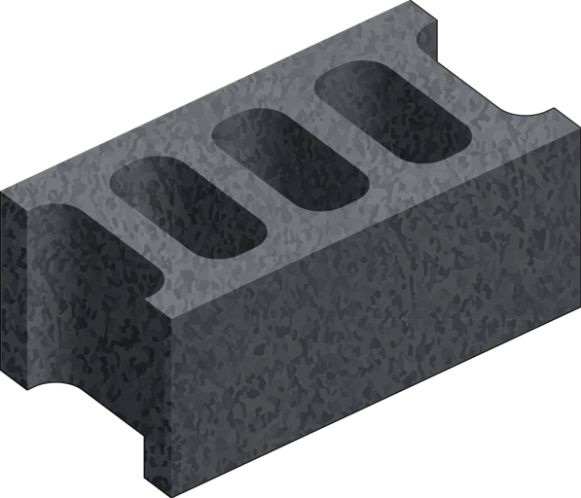
今回僕が買ったブロックは
"
コーナ
ー
"と書かれていたブロックです。
"
ス
ミ
"とも呼ぶようです。
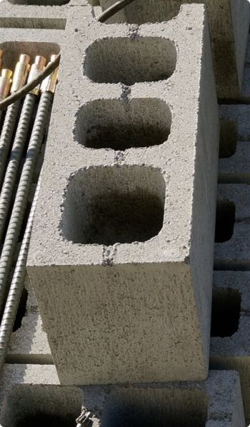
ブロックの片側がまっすぐになっています。
他にも横に鉄筋を入れられるようになっている"ヨコ"と呼ばれるブロックや、"ヨコ"で"スミ"の"ヨコスミ"なんてのもあります。
これは幅が15㎝の重量ブロックで"キホン"の形のブロックですよって書いてあるんですね。「C−15」のCはC種ってことです。
僕がピザ窯の土台に選んだブロックは 「 15㎝の重量ブロックのコーナー（スミ ） 」 と 「 12㎝の重量ブロックのコーナー（スミ ） 」 を それぞれ12個ず つ です。
ちなみに僕が使ったブロック（たぶん一般的なものだと思います） の 長さは39㎝、高さは19 ㎝ です。
12㎝のブロック ＠138円×12個＝1656円
15㎝のブロック ＠188円×12個＝2256円
合計 3912円
僕は木工とか壁塗りとかは多少DIYの経験があるのですが、セメントを練るとか、モルタルを塗るとか全くしたことがありません。
そもそも 、 セメントとモルタル、コンクリートの違いすら分かっていませんでし た 。
Wikipediaによると"セメント (Cement) とは、一般的には、水や液剤などにより水和や重合し硬化する粉体を指す"のだそう。
いまいち分かりにくい。僕が買ったセメントは
、
石灰岩や石膏を粉末にしたも
の
で、そこ
に
水を加えると、化学反応によって固まるも
の
で、それを「セメント」というらしいです。
で、このセメントに水を加えて練っただけのものを使うことは特殊な場合を除いて、あんまりないみたい。
モルタルとは、上 の セメント1に対して2〜3の砂を混ぜて水で練ったも の 。
ピザ窯の土台を作るときに使うのは、このモルタルです。
セメントに砂を混ぜて水で練るものの他にドライモルタルという、水で練るだけでモルタルになるものもあるみたいです。
コンクリートとは 、 セメントに砂と砂利を混ぜて、水で練ったも の です。
今回のピザ窯作りでは使う予定はないけれど、強度は一番あるようなので、土台を作るのにコンクリートを使うという選択肢も無くはありません。
ピザ窯 の 土台部分は直接熱が当たるわけではないのでモルタルを使って作 る のですが、釜の部分は高温に耐えられるレンガ（耐火レンガ） を 高温に耐えられるコンクリート（耐火コンクリート）で積 み ます。
コンクリートというと先に書いたように、砂利とか入って重そうで大変そうだけれど、水を混ぜて練るだけのものが売られています。
ピザ窯の作り方を本やネットで調べていると、すこぶるよく登場するのが、これ
。
アサヒキャスターのCA-13-
T
という商品です。
が、しかし意外とどこのホームセンターにでもあるってもんでもないみたいで、（もちろんネットでは買えるけど）ピザ窯建設予定地の母の家の近所のホームセンター２軒には置いていませんでした。ので、自宅近くのホームセンターで購入。
耐火モルタルっていうと、単に耐火性のあるモルタルなんだなって思っちゃう。もちろんそれは間違っていないんだけど 、 耐火モルタルは、火を入れないと固まらないモルタ ル のことです。
基本的には素人は手を出さないほうが良さそうな代物だそうです。
耐火コンクリートと耐火モルタルの違いがよく分かってなくて、こっちを買いそうになりました。これを買わないように気をつけてください。
さてさて、ピザ窯の土台の部分は高温になるわけではないので
、
普通のモルタルでブロックを固定して積ん
で
いきます。
ブロックを一段に8個使って上に3段積むのに（ブロック24個）使ったモルタルの材料は
、
セメント1袋半と砂4袋
半
でした。土台にのせる天版作りにセメント1袋と砂3袋でした。
買ったのはセメント3袋と砂9袋。
セメント ＠398円×3袋＝1194円
砂 ＠218円×9袋＝1962円
合計 3156円
完成したピザ窯の土台です。これをこれから作っていきます。
僕がピザ窯の土台を作ったところは写真のようにコンクリートの上なので、工程としましてはこんな感じでピザ窯の土台を作っていきました。
ブロックの土台 コンクリートに穴を開ける ⇒ 鉄筋を立てる ⇒ モルタルを練る ⇒ ブロックを積んでいく
モルタルの板 木材でモルタルを流す枠を作る ⇒ モルタルを練る ⇒ 木枠に流して固める
積んだブロックの上に、モルタルで作った板をモルタルで固定する
コンクリートの地面に鉄筋を立てたい。のですが、僕がピザ窯を作るときに参考にしていた本やネットにもその方法が載っていなかったので、どうするのがいいのか自分なりに調べて考えた方法です。
コンクリート の 地面に穴を開けて、鉄筋アンカーを打ち込みま す 。
ホームセンターで買ってきた鉄筋アンカーです。
太さ13㎜長さ600㎜の鉄筋アンカ
ー
です。ブロックを積んだときの縦の幅が190㎜なので
、
3段積むのに調度良い長さの鉄筋アンカ
ー
です。
太
さ
13㎜の鉄筋アンカーを刺すのに必要な穴の径は18
㎜
です。18㎜の径のドリルで穴を開けていきます。
これを振動ドリルに取り付けて穴を開けていきます。この鉄筋アンカーに必要
な
穴の深さは60
㎜
です。なので、ドリルの先っちょから60㎜のところにテープで印をつけておきますこれでいちいち穴の深さを量る手間が省けます。
土台のブロックを仮置きしました。
幅15㎝と12㎝の重量ブロックを使い
、
両サイドは15㎝のブロッ
ク
（ピンク）で
、
奥と真ん中は12㎝のブロッ
ク
（オレンジ）です。
ブロックの長さが39㎝で、目地を取らないので計算上は
、
縦も横も39㎝+39㎝+12㎝=90
㎝
になる予定です。
手前のブロックの横幅が90㎝になるようにメジャーで測ってブロックを調整しました。
鉄筋を打つのは、この丸のところにしました。
各ブロックに一箇所づつになるようにしました。これで、一応全部のブロックに鉄筋が入っていることになります。
丸印の穴からコンクリートの地面に印を付けます。その辺に落ちていた鉄の杭みたいなのをガンガン打ち付けてコンクリの地面に印をつけました。もちろん、鉛筆とかでもいいんでしょうけど。
それと、せっかくブロックを仮置きしたので、 マスキングテープでブロックの位置に印をつけときました 。
振動ドリル
で
穴を開けていきます。
もっとパワーのある工具なら違ったのかもしれませんが、けっこう大変でした。
最初のうちは力まかせに上から押さえていたのですが、そうすると、ビット（振動ドリルにつけている先っちょのドリル）がすぐ緩んで外れてしまって、力もいるし、ビットも外れるしでなかなかうまくいきません。
途中からは、加減して押し付けるようにして 、 時間を掛けて削っていくようなイメー ジ でやるとうまくいきました。
開けた穴です。ドリルのテープのところまで開けたので60㎜（6㎝）の深さです。
この穴の中に、コンクリートの粉塵が入り込んでいるので、周りを掃きながら、ドリルを軽く刺して何度か回して中の粉塵をなるべく取り出しました。
ここに鉄筋アンカーのこっち側を刺して、上からハンマーでゴチンゴチンと入らなくなるまで打っていきます。
穴の角度が真っ直ぐでないと、鉄筋が曲がって斜めになってしまいますが、相当ひどくないかぎり、あんまり気にしなくても大丈夫です。しっかり鉄筋を打ち込んだあとに、ぐいぐいして、調整できるので。
しっかりと打ち込んだら、ぐいぐいと鉄筋
を
真っ直ぐには調整し
て
おきます。そうしておかないと2段目、3段目に積んだブロックの穴を通らなくなってしまします。
なんとか、無事、鉄筋をコンクリの地面にぶっ刺す事ができました。周りを掃き掃きして、いよいよブロックをモルタルで積んでいきます。
ピザ窯の土台のブロックを積むモルタルを練ります
。
モルタルはセメントに砂を混ぜたものを水で練ったも
の
ですね。土台自体は高温にならないので、普通のモルタルでブロックを積んでいきます。モルタルはこ
の
トロ
船
と呼ばれるプラスチックの箱で練ります。
バケツでも練れますが、ピザ窯位のサイズになると、それなりの量のモルタルを使うので、ある程度の量が練れるトロ舟のようなものが欲しいところではあります。ちなみにこ
の
トロ舟は80
L
のものです。
練るのに使うのは、こんなクワや
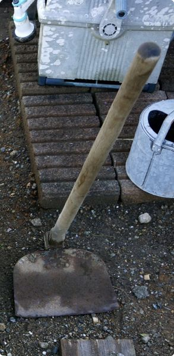
大きなスコップや小さなシャベル（ん？関西では逆か）です。
このモルタルを練るのってけっこう大変です。なので、練る道具もでかくて重い物より、軽くて取り回しのいいもののほうが体の負担が少なくて済むかと思います。
砂とセメントです。
砂の袋に書いてありますが、
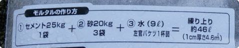
セメント1袋に、砂3袋、水9
L
が基本のようです。この量をいっぺんに練るのは大変だし、どんどん乾いてくると困るので、とりあえずセメント半分で練ります。
セメント半袋と砂1袋
半
です。
これをまず、水を入れる前にクワやスコップでしっかりと混ぜあわせます。
トロ舟の角のところは小さなシャベルを使って、セメントの粉が残らないように混ぜます。しっかり混ぜ合わせたら、水を入れていきます。4.5Lなのですが、適当に入れちゃいます。固さを見て少しずつ後で調整します。
クワ、スコップ、シャベルなんかを使ってしっかり練っていきます。全体に水が行き渡るように練って、バサバサした感じなら水を足します。最初は水道につないだシャワーヘッドで全体に水をまわしかけて、あとの微調整ではジョウロを使いました。
トロ舟でモルタルを練るときにトロ舟の片側に木材とかを挟んでちょっと傾けてやると、一方向に水が流れるのでやりやすいです。
下の方から掻き上げて、混ぜるようにして、トロ舟の角もしっかりと混ぜます。
モルタルの練り上がりです。
僕がイメージしていたより、固いというか、ぼそっとした感じです。
水が少ないと接着が悪そうだし、多いとブロックを積んだときに重さですごく沈んでしまいそう、いい感じの水分量にしたいところです。が、これまた僕がイメージしてたよりはアバウトな感じでも大丈夫でした。
とりあえず
、
コ
テ
で練ったモルタルを置いていきます。
コテです。ピザ窯作りでブロックとレンガを積む用に左の三角のコテを新しく買いました
。
ブロックゴ
テ
と言うそう。
ホームセンターで751円の値札がついていたのですが、サビサビだったので、300円でいいよ！とおマケしてくれました。
ブロックゴテ 300円
ブロックの印にそってモルタルを置いて、
その上にブロックを乗せ、全体を押さえたら、
水平と垂直をと
り
ます。タオルを当ててハンマーでコンコンしながら、やりました。
水平と垂直をとったら（結構時間がかかりました）、ブロックの穴にモルタルを詰めていきます。
モルタルをれて、シャベルでシャコシャコ突くようにして空気を抜くと結構なモルタルが入っていきます。
今回 は 鉄筋の入っているとこ ろ と 、 ブロック同士のつなぎ目の 穴 にだけ モルタルを詰めていきました。
2段目、3段目も同じようにモルタルをのっけた上にブロックを置いて、水平、垂直をとる、を繰り返します。
写真はないのですが、ブロックを１段のせて水平と垂直をとったら、はみ出たモルタルをコテでとって、少ないところに詰め
て
濡らしたスポンジで目地を拭い
て
軽く整えました。
最後の3段目は、上からモルタルの板をのせるので、なるべく接地面を多くするべく全部の穴にモルタルを詰めることにしました。
真ん中の穴4つが残っていますが、練ったモルタルがなくなったので、とりあえずここで終了にしました。モルタルの板を乗っけるときに一緒に埋めることにします。
このブロックを積むのに使ったモルタルの量 は セメント1袋半、砂4袋 半 でした。
ピザ窯の土台の上に乗せる天板を作ります。土台にのせる天板も直接火が当たる部分ではないので 、 普通のモルタ ル を使います。
まずは、木材で天板用の枠を作ります。
作りたい土台の大きさ は 900㎜×900 ㎜ なのですが、モルタルで900㎜×900㎜の板を作ったら、重すぎて運べなさそうだし、強度的にもどうなのかと思いまして 、 450㎜×900㎜の板を2 枚 作ることにしました。
用意したの
は
イエローコンパネ1
枚
と
、
48㎜×24㎜の角材、1×3（ワンバイスリー）の
板
です。
ホームセンターで角材は900㎜でカットしてもらい、1×3の板は1150㎜でカットしてもらいました。
コンパネは、もっと安いのがあったのですが、イエローコンパネ は モルタルが剥がれやす く 、焼床の板を作るときに表面がツルッとしていたほうがいいかなと思いイエローコンパネにしました。
コンパネの幅が900㎜なので、900㎜の角材を450㎜の幅になるように木ねじで止め、その両サイドを1×3の板で押さえるようにして木枠をつくりました。
要するに内側が900㎜×450㎜になるような枠がふたつ出来ればいいわけです。高さは角材の高さ48㎜です。
こんな感じです。
イエローコンパネの残りは焼床の枠を作るときに使
い
ます。
このサイズでも、強度が不安だったので、モルタルの中 に ワイヤーメッシ ュ を入れることにしました。
ワイヤーメッシュとはこんなやつです。
ホームセンターでワイヤーメッシュのカットを頼んだら、これを使って勝手に切ってと言われたので、
こんな感じに900㎜×450㎜より一回り小さくなるように850㎜×400㎜くらいの感じでアバウトに勝手に切りました。
イエローコンパネ 1520円
24×48×3985㎜角材 350円
ホワイトウッド 1×3 6ft 696円
ワイヤーメッシュ 350円
木材カット代 ＠30円×4=120円
で、モルタルを練ってこの枠の中に流します。実際には、こっちの天板のほうが乾くのに時間がかかりそうだったので、ブロックを積むのより先にこっちの作業をしました。
ブロック積みのときの要領でモルタルを練って、枠に入れます。
半分の高さ位の量のモルタルを入れたら
、
角にもしっかり入るよう
に
コテで均して、ワイヤーメッシュを枠に当たらないように（モルタルの外に飛び出ないように）入れます。
上からもモルタルを入れて表面を均します。均したら
、
木枠をコンコン叩いて、中の空気を抜
き
ます。
もう片方も同じようにしてモルタル、ワイヤーメッシュ、モルタルの順に入れていきます。でコンコンします。
最初に木枠に入れた時にはボソッとした感じのモルタルに見えましたが、均していると含んでいる水分が出てきてテロっとした感じになりました。
これであとは乾くまで放置します。2、3日で乾くみたいですが、1週間くらい置いたほうがよりしっかりと固まります。この日から天気が崩れるようだったので、モルタルの表面が乾いたら雨に濡れないようにブルーシートを掛けておきました。
ピザ窯の土台の天板用のモルタルは 、 セメント1袋に砂3 袋 でちょっと残るくらいでした。
これで天板の出来上がり！のはず。あとは天版をブロックの上に固定すれば土台は完成で！のはず。
結局、2週間以上放置していたモルタルを流して作った天板です。

こんな感じになっていました。まあ、表面はお世辞にもきれいとは言えませんが、こっちは下面になるので良しとしよう。
モルタルが乾くときに水分が抜けてちょっと縮んで、木枠からちょっと剥がれている感じになっていました。
モルタル板を木枠から外します。横からとめた木ねじを抜いて、
前後の板を外して、
モルタルの板
に
木片を当ててハンマーでコンコン叩いてずらして外しまし
た
。
「コンコン叩いて外しました」って書きましたが、ほんとはコンコンコンコンコンコン、、、、、、、、あれっ？コンンコンコンコンンコン、、、、コンコン、ふんぬっっっっっっっっ、あれっ？コンンコンコンコンンコン、、、、ふんぬっっっっっってな感じで、けっこう抜くの大変でした。せっかく作った天板が割れちゃうと嫌なので、力任せにもできず。
とりあえず、なんとか抜けました。
モルタルの板自体はこんな感じにたくさん
の
気泡が入っていまし
た
。固まる前に木枠をコンコン叩いて空気抜いたつもりだったのになあ。まあ、この板は直接火が当たるわけじゃないし、中にメッシュも入っているから大丈夫だと思うことにしよう。
もう片方も抜いて、とりあえずブロックを積んだ上に乗せてみました。
おお〜！いい感じです。多少隙間があいていますが、そこはモルタルで調整します。
さて、ブロックを積んだ上にモルタルの板をしっかり水平に固定します。
まず、モルタルを練ります。今回は天板を乗っけるだけなので、必要なモルタルも少量です。
セメント1／6袋と砂半
袋
（どっちもだいたいです）で練りました。
これまでと同じようにして練り上げたモルタルです。
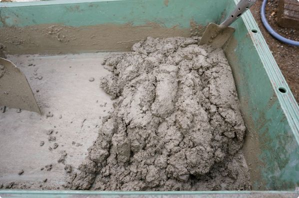
一旦モルタル板を外して、練ったモルタルを、残っていたブロックの穴にも詰め、積んだブロックの上にも厚めにのせました。
その上からモルタルの板を載せて、ブロックを積んだ時と同様に
、
タオルを当ててハンマーでコンコンあっちこっちを叩
き
ながら、なるべく水平になるように調整します。
うん、なんとなく水平な感じになりました。
水平を調整したら、目地
を
目地鏝（めじごて
）
なんかでならします。
目地コテはこんなヤツです。
しばらく置いて、半乾きくらいになったら
、
濡らしたスポンジでモルタルをならしながら、余分なモルタルを拭きとっ
て
終了です。
やっとピザ窯の土台が完成！
ピザ窯の土台だけでも、けっこう完成した感あるんですが、これからが本番です。いよいよ耐火レンガと耐火コンクリート（アサヒキャスター）を使って、ピザ窯本体を組んでいきます。
とその前に、「耐火レンガの選び方」と耐火レンガを積んでいくのに必要な「木工作業」をします。
ピザ窯に使う耐火レンガ選び
耐火レンガで ピザ窯を作る前になんとなーくの設計図を書こう と思ったのですが、そもそも耐火レンガってどんな種類があるの？大きさ一緒なの？耐火レンガの一個のサイズってどのくらい？一個いくらなの？、、、などなど、僕は耐火レンガを人生で一度も買ったことがないのでハテナ？だらけでした。
耐火レンガって、高温に耐えられるレンガってことですよね。ピザ窯の中の温度は300度以上、できれ ば 400度くらいまで上げた い ので、普通のレンガはお値段が安いけど、耐火レンガじゃないとピザ窯、石窯は無理です。
で、4軒くらいのホームセンターをウロウロしてみたら、けっこう耐火レンガって種類があって、しかも大きさがバラバラだってことが分かってきました。
耐火温度、サイズ、価格は僕がホームセンターで見たり、調べたりしたものですので、他の規格のものもあると思います。
耐火温度：1200〜1300度
サイズ： 約220×105×54㎜
価格(税込）：225円〜228円くらい
色合いがとっても良くて、フランスレンガのブラウンでピザ窯を作ろうと最初は思っていたんですけど
、
お値段がちょっとお高
い
。一個の値段の違いは数十円でもピザ窯を作るのに使う耐火レンガは150個オーバー。60円違えば1万円近く違ってくるのです。
最終的に僕が使うことにした耐火レンガと比べるとサイズも一回り小さい。
そのまんまですがアンティークな耐火レンガです。
耐火温度： -
サイズ： 約230×115×65㎜
価格(税込）：173円くらい
アンティークなレンガはとっても素敵だと思ったんですけど、アンティークだから、あっちこっち欠けてたりして、きちっとした長方体じゃない。
サイズは一応書いてあるけど、かなり怪しい。そんな耐火レンガを素人の僕がちゃんと積めるのか？と思ったのでパスしました。
焼き過ぎレンガ自体は写ってませんが、、、
耐火温度： 900度？
サイズ： 約210×100×60㎜
価格(税込）：153円くらい
焼き過ぎレンガの耐火性は200〜300度くらいまでと書いてある本もありましたが、ホームセンターの看板には900度と書いていました。耐火温度が900度なら十分ですが、200〜300度ならピザ窯にはちょっと温度が低い。
ブリックヤードレンガという名前で売られているレンガ。
耐火温度： 1200度
サイズ： 約230×115×65㎜
価格(税込）：168円くらい
"ブリックヤード"とはなんぞや。と調べてみたら"レンガ工場"のことなんだって。レンガ工場レンガ？
お値段も耐火温度も問題なく、ピザ窯作りに良さそうなレンガです。ネットで見てみると、耐火ブリックヤードレンガを使ってピザ窯を作っている人もけっこういるようです。
耐火レンガといえ
ば
SK-3
2
というくらい、ピザ釜の本、ネットでよく見かける耐火レンガです。
耐火温度： 1200度
サイズ： 約230×114×65㎜
価格(税込）：173円くらい
SK-32の32の数字によって耐火温度が変わってきます。32の耐火温度は1200〜1300度です。1〜40番まであるみたいですが、普通のホームセンターではSK-32の耐火レンガしか見かけませんでした。
耐火レンガには、いわゆる普通の形をしたレンガ以外のものもあります。
半マスというのは
普通のサイズの耐火レンガを半分にした四角い耐火レンガ
のことです。この半マスの耐火レンガは意外と売っていませんでした。たまたまかもしれませんが、わりと大きめのホームセンターを4軒回って、そのうちの1軒しか置いていませんでした。僕は、自宅とピザ窯を作っている場所が離れているので、できればレンガ類はピザ窯建設地に近いほうがいいのですが、半マスは自宅そばのホームセンターにしか置いておらず。。。
半マスのレンガ は 基本のレンガをディスクグラインダーで切って作って も いいんですが、けっこうな数（35個くらい）を使うし、キレイに切れるか心配だったので買うことにしました。レンガは半分だけど、値段は普通のサイズのレンガと変わりません。切ったほうが良かったか。。。
その名の通
り
大判の耐火レン
ガ
です。基本のレンガの約6個分の耐火レンガです。ですが、お値段は6個分ではありません
。
1個2380円！
この大判レンガを縦に半分に切ってピザ窯の前面を塞ぐ（穴を小さくする）のに使います。大判お耐火レンガも半マスと同じ所でしか売っていませんでした。
半マスとは違って横にスライスしたような耐火レンガ
が
半ペ
イ
です。使う予定はなかったので買わなかったのですが、結果的にレンガを横にスライスしたので、これが一枚あれば便利でした。
僕は最初、フランスレンガを使う予定をしていたので、フランスレンガのサイズでピザ窯の設計図を書いたのですが、SK-32の耐火レンガで作ることに変更して、設計図を書き直し、さらに半マスのレンガを探しに行ったり、とけっこう耐火レンガを何度もホームセンターに見に行きました。
耐火レンガの風合い、サイズ、価格がみんな違うので、どれを選ぶのが、なるべくお金がかからず、作りやすいのかということを考えて選びました。
思っていたサイズと違うと、また一から設計をし直さないといけない場合もあるのでどの耐火レンガを選ぶかは結構大事です。
ピザ窯の作り方の本で紹介されていた耐火レンガSK-32のサイズ は 225×110×60 ㎜ となっていましたが、僕がホームセンターで買ったSK-32を実際に測ってみる と 230×114×65 ㎜ でした。5㎜違うと5個並べたら25㎜（2.5㎝)も違ってきちゃいます。
SK−32という表示は耐火温度の表示ですのでサイズは色々あるみたいです。
ホームセンターで見ていて大差無いように見えた、耐火ブリックヤードレンガ（230×115×65㎜）と耐火レンガSK-32（230×114×65㎜） は 幅が1㎜違 い ます。
この1㎜の違いがピザ窯作りに大きく影響するかどうかはわかりませんが、SK-32を選んだのはこの1㎜の違いからです。僕がピザ窯に使う半マスの耐火レンガの幅が114㎜だったので、基本の形の耐火レンガも同じ114㎜のSK-32を使うことにしたのです。
SK-32の耐火レンガ230×114×65
㎜と
半マスの耐火レンガ114×114×65
㎜
です。
と、ここまで1㎜の違いで選んだ的なことをとうとうと述べましたが、この写真を見ても分かるよう
に
レンガのサイズって大
体
ですからね。
ピザ窯作りの木工作業
僕がピザ窯を作っているのは自分の家ではなくて、自宅から車で2時間くらい離れている母の家です。なので、自分の家でもできるピザ窯作りに必要な木工作業をやっておこうと思いまして、まとめて木を切ったりしました。
まず は 焼床（やきどこ）を作るための木 枠 を作ります。焼床はピザ自体をのせて焼くところです。下から薪でガンガンに熱されるので、耐火コンクリートのアサヒキャスターを使ってコンクリートの板をこしらえます。
使うのはピザ窯の土台の天版を作るときに使ったイエローコンパネの残りと、30㎜×40㎜の角材です。
焼床の厚さは40㎜（4㎝
）
にすることにしました。
30㎜×40㎜の角材はホームセンターで買う時にカットしてもらいました。600㎜ × 670㎜の焼床を作りたいので、600㎜と750㎜の長さに2本ずつ切ってもらいました。
カットしてもらってきた角材をとりあえずのっけてみました。
端っこの余りがアーチのかまぼこ木型に使えそうだったので、丸のこでカット。
アーチのかまぼこ木型に使う方は長さも切り揃えました。
角材を600㎜ × 670㎜になるようにしっかり押さえながら木ねじでとめます。
これで焼床の木枠は完成です。
30×40×3000㎜の角材 448円
アーチ状にレンガを積んだピザ窯にするためには、アーチの形をしたかまぼこ型の木型を作ります。ってけっこう大変でめんどくさそう。これ作るだけでけっこうなDIYな感じです。
なんとか作らないでアーチを組む方法はないのか？それともアーチじゃなくて天版をのっける平たいタイプにするか？と悩んだのですが、やっぱりアーチは男のロマンなので譲れないし、自分の作りたいサイズのアーチにするなら木型を作るしかないという結論になりました。
材料
は
下地用の11㎜の合
板
と、
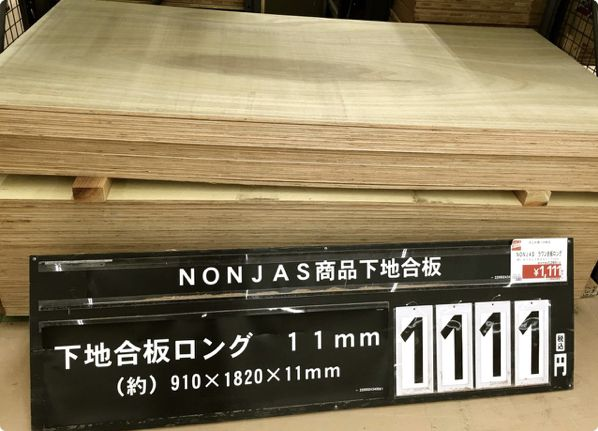
薄い2.4㎜の合
板
、
と
さっきのイエローコンパネの余
り
。
かまぼこ型の木型のサイズ は 高さ300㎜（半径）幅600㎜（直径）奥行き720 ㎜ の物を作ります。
11㎜の合板も、2.4㎜の合板もホームセンターである程度切ってもらってきました。
11㎜の合板の方は、
こんな感じにカットしてきました。半円用
に
310㎜幅を2
枚
、クサビ用
に
114㎜幅を2
枚
、と細い余り。
下の幅のある2枚を使って半円
を
6
枚
作ります。円に切ってそれを半分にカットするでもいいのですが
、
板のまっすぐな部分を使って半円を切
る
ことにしました。
半径300㎜の円を書くのにコンパスが必要なので、木の切れっ端を使っ
て
簡易コンパ
ス
を作ります。
穴の中心から穴の中心までが300㎜になるよう
に
ドリルで穴をあけます。

大きい方の穴は鉛筆を入れる穴で、小さい方の穴は、釘とか木ねじを刺す穴です。
鉛筆がきっちりハマりそうなサイズのドリルがなかったのでちょっと大きめの穴を開けて、鉛筆にマスキングテープをぐるぐる巻いて穴にきっちり入るようにしました。
簡易コンパスの完成です。
簡易コンパスで書いた半円を切ります。糸ノコでも切れると思いますが、けっこうな時間と労力が掛かりそうだったので、ホームセンター
で
ジグソ
ー
を借りてきました。
ジグソーです。刃は借りた時についていたものをそのまま使いました。人生初ジグソーです。キッチリ細かい曲線を切るとなれば話は別ですが、ただ丸くジグソーで曲線を切るのって、思ってたほど難しくはなかったです。
これも動画で撮ってみました。ジグソーの振動でちょっとガクガクしてますが、素人のジグソーさばきをご覧ください。
6枚全部切りました。
6枚を重ねてみるとこんな感じです。
多少の不揃いは否めませんが、上出来ということにしよう。
さてさて、組んじゃうとけっこうなサイズになっちゃうので、ここから先はピザ窯建設予定地（母の家）に持って行ってからやりました。
かまぼこ木型になるカットした木たちです。薄い合板も買った時にホームセンターでかまぼこ型の奥行き720㎜に合わせて切ってもらいました。

こんな感じに幅が600㎜になるようにして下から木ねじでとめていきます。使った木ねじ
は
2.5㎜のスリ
ム
って書いてあったものです。
半円の板とイエローコンパネを下からそれぞれ3箇所ずつ（失敗したところは4箇所）木ネジでしっかりととめました。
薄い板に下から木ねじでとめるのってけっこう難しかったです。
こんな感じに割れちゃったところが何箇所も。。。
ここに薄い合板を同じ木ねじでとめていきます。

薄いといっても、木の板ですからそんなに柔らかいわけではありません。
グッと抑えても、端っこは全然つかないくらい固くて、いつバキッとなるか怖いです。真上を最初にとめて、押さえながら少しずつ両サイドを止めていきました。
下の方になるほど反発が強いの
で
木ねじの間隔を狭め
て
とめました。これでアーチのかまぼこ木型が完成。けっこうバリバリに割れてしまった箇所もあったので、いつボヨ〜ンと外れるかとビビっていましたが、なんとか大丈夫でした。
11㎜の合板 1111円
2.4㎜の合板 498円
スリムビス25㎜ 198円
全ての木材カット代 450円
ジグソーレンタル2泊3日 300円
ピザ窯のレンガをアーチに組む時に使うクサビを作ります。
これはかまぼこ木型を作るのに使った11㎜の合板の残り
を
114㎜の幅にホームセンターでカットしてもらったも
の
を使います。
一応、こんなサイズのクサビを作るつもりです。⇒
クサビの計算の仕方
線を引いて、丸ノコでカットをひたすら繰り返します。
丸ノコの刃が1㎜以上あるので、線を引く、丸ノコで切る、また線を引く、切る、線、切る、線、、、、、みたいな感じで切っていきました。
たくさんあったほうがアーチを組む時に楽そうだったので、アホみたいにたくさんクサビを作りました。100個くらい。
木の枠とか、かまぼこ木型、クサビのような木工作業で作るものは、それ自体はピザ窯のパーツではないので、できてる感というか、進んでる感があんまりないんですけど、避けては通れないので仕方ありませぬ。
とりあえず、これでピザ窯作りに必要な木工作業は終了です！
アサヒキャスターで焼床を作る
耐火コンクリートのアサヒキャスタ
ー
を使っ
て
焼
床
（やきどこ）、ピザをのせて焼くところを作ります。
アサヒキャスターは耐火コンクリートです
。
耐火モルタルではありませ
ん
。耐火モルタルは火を入れないと固まらないモルタルのことです。
アサヒキャスターは意外とどこにでも売っているものでもないみたいで、4軒のホームセンターのうち1軒でしか取扱がありませんでした。ネットでは普通に買うことができますが。
アサヒキャスターをトロ舟に出して、
そこに水を加えて、
よく練ります。
アサヒキャスターは固まるのが速い。とにかく速い。というのをネットで見ていたので水を多めにゆるめに練りました。
しっかり混ぜて練ったアサヒキャスターを、予め作っておいた焼床の木枠に入れていきます。
ピザ窯の土台の天版をモルタルで作った時には、中にたくさん空気が入ってしまっていてので、今回
は
全体をヘラでサクサク刺した
り
、けっこ
う
時間をかけて木枠をコンコン叩いた
り
してから、全体をならしました。
こ
の
600㎜ × 670㎜ × 40㎜の焼床に使ったアサヒキャスターは1袋と1/4袋くら
い
でした。
朝一にこの作業をして、次の日の昼過ぎに外しました。1月の寒い時期でしたが、しっかり固まっていました。
木枠を外して、焼床を起こすと、
おおっ！すごい！周りのものが映り込むくらいピッカピカッです。空気もそれほど入ってないようでいい感じです。
無事、焼床が完成しました。
耐火レンガを切る
アサヒキャスターで作った焼床
は
何箇所か耐火レンガを横に飛び出させ
て
、その上にのせる予定なのですが、耐火レンガをただ横にして積むだけだと長過ぎるので、少し切ることにしました。
それぞれ60㎜ずつ切り落とします。
レンガをカットするのに使うのは、ダイヤモンドカッターを装着したディスクグラインダーです。
ディスクグラインダーもホームセンターで一泊二日借りても数百円なんですけど、悩んだ末買うことにしました。
結果としては、思っていた以上にピザ窯作りに時間がかかったことと、ちょくちょくレンガを切る作業が最後の最後まであったので、買って良かったです。
僕が人生で初めてレンガを切るためのディスクグラインダーを買うときに調べたこと、考えたことなんかをまとめました。
ホームセンターでディスクグラインダーを借りる人も、レンガを切るためのディスクグラインダーの刃はレンタルでも自分で買わなくてはいけないので、その辺りの参考にもなるかと思います。
さて、ディスクグラインダーを買おう！と思ってネットで調べたり、ホームセンターに出かけて行ったりしたのですが、最初は何をどう選んだらいいのか全く分かりませんでした。っていうか、ディスクグラインダーに種類が色々あると思っていませんでした。
僕が買ったディスクグラインダーはこれです。
ディスクグラインダーは
、
マキタ、日立工機、パナソニック、RYOBI、BOSC
H
など、いろんなメーカーが出していますが、性能的なことで言えば、有名なメーカーならどこのものでも全く問題ないと思っています。素人がDIYで使うだけですので。
マキタのを丸のこを持っている、というだけの理由でディスクグラインダーもマキタから選ぶことにしました。
ディスクグラインダーを調べていると最初に目につくのが、ディスクのサイズでした。ディスクとは、ディスクグラインダーに取り付ける円型の"刃"のことで、こ の 直径が100 ㎜ のもの と 125 ㎜ のものがあります。
一般的によく使われているのは100㎜の方で、ディスクグラインダー本体も100㎜のほうがたくさん売られていますし 、 ディスクの種類も100㎜のほうが豊 富 です。
100㎜のディスクグラインダーのほうがサイズも重さもコンパクトで、扱いやすそうだったの で 100㎜の方を選 ぶ ことにしました。
マキタの100㎜のディスクグラインダーを探していると、なにやら 「 高速回 転 」 と 「 低速高トル ク 」 という回転数の違うディスクグラインダーがあるらしい、ということに気が付きました。マキタのディスクグラインダーで言えば 、 高速回転の方は1分間に12000回 転 で 、 低速高トルクの方は1分間に9000回 転 するのだそう。
9000回転の低速高トルクの方は、ちょっと回転が遅いぶん高トルクということらしい。高トルクとは最大出力が高い、ま あ 馬力があ る ということらしいです。
高速回転の方が金属を切断するのに向いていて、低速高トルクはコンクリートなどを切断するのに向いている、ということはあるようなのですが 、 レンガをカットするならどちらでも問題なさそ う でした。
なんとなく高速で回転するディスクグラインダーがおっかなそうなので
、
低速高トルクのディスクグラインダー
に
しました。9000回転でも十分高速な感じがしますし。
ディスクグラインダーを買ったら、今度はレンガを切る用のディスクを選びます。
レンガの切り方をネットで調べると、 " ダイヤモンドカッタ ー " とか " ダイヤモンドホイー ル " と呼ばれる刃をディスクグラインダーに取り付けてレンガを切るみたいです。
で、ダイヤモンドカッターには " ウェーブタイ プ " というものと " セグメントタイ プ " というのがありあます。
これがウェーブタイプです。
ウェーブタイプは瓦とかタイルを切
る
時に使うダイヤモンドカッターなのだそう。
そして、これがセグメントタイプ。
セグメントタイプは、ブロックとかレンガを切
る
時に使うダイヤモンドカッター。
というわけで、 " 100㎜のディスクグラインダーに取り付ける、セグメントタイプのダイヤモンドカッタ ー " を探しにホームセンターに行きました。
が、しかし、売ってるディスクグラインダーの刃とか砥石と か 100㎜じゃなくて105 ㎜ のものがほとんど。105㎜でいいの？
いいんです！店員さんに訊いたところ、大丈夫ということでした。
セグメントタイプのダイヤモンドカッターにもたくさんの種類と言うか、値段の差がものすごくありました。
これは5枚入ってて、1080円。
こっちは1枚で1280円。
他にも1枚3000円〜5000円というお高いセグメントタイプのダイヤモンドカッターもありました。
それとは逆に100円ショップでもセグメントタイプのダイヤモンドカッターが売ってるみたいです。
これも事前にネットで調べました。やっぱり安い刃はすぐダメになって結局すぐ交換しなければいけなくなるみたいです。「すぐダメになる」のすぐがどのくらいなのかの基準が僕にはないので何ともいえませんが、1000円くらいのものを買いました。
1枚で1280円のダイヤモンドカッターをお買い上 げ 。
それとレンガをカットするために必要なものがもう一つあります
。
レンガタガ
ネ
と
か
ブロックタガ
ネ
と呼ばれるタガネです。
それから、レンガを切るときには結構な粉塵が出ますし、レンガのかけらが飛んでこないとも限りません。メガネに防塵マスク、手袋を装着してレンガをカットします。
素人は素人らしく安全対策をしっかりしてレンガを切ります。
初めてのディスクグラインダーなので、ビビりながら切っていますが、ディスクグラインダーの重さだけでほぼキレイにカットできました。
はじめてのレンガカットで、のこぎりで木を切るみたいに片方を浮かして切っていますが、平らなところにおいて安定させて切ったほうがやりやすかったです。
そんなこんなで、耐火レンガを６個ディスクグラインダーでカットしました。
ディスクグラインダーでレンガをカットするって、半分は折るみたいな感じなので、毎回うまくいくものなのかな？割れちゃったりしないのかな？と心配していたのですが、
普通にカットするだけなら、わりと失敗しないみたいです。耐火レンガ6個カットして、6個とも上手く切れました。
ディスクグラインダー 9300円
ダイヤモンドカッター 1280円
ブロックタガネ 1080円
ピザ窯の耐火レンガを積む
いよいよピザ窯本体、耐火レンガ積みです。用意したレンガ
は
半マスの耐火レンガ36
個と
耐火大判レンガ1
個
。
半マスレンガの下に隠れてて見えませんが耐火の大判レンガはこんなやつです。
一緒に写っているのは普通サイズの耐火レンガです。
そして
、
普通の形の耐火レンガSK-32を135
個
。
この耐火レンガの重さは1個3.5kg。135個で
、
473kg
!
軽トラの最大積載量、軽く超えてると思うですけど。。。
ピザ窯で使う予定の耐火レンガを並べてみました。
用意し
た
アサヒキャスタ
ー
（耐火コンクリート）は6袋。（後で一袋追加したの
で
全部で7
袋
）
SK-32基本の形の耐火レンガ
＠168円×135 22680円
耐火レンガ 半マス ＠168円×36=6048円
耐火レンガ 大判 2380円
アサヒキャスター ＠3888円×６=23328円
さて耐火レンガを積んでいこう！
耐火レンガを積んでピザ窯をこしらえていくのですが、乾きの速いアサヒキャスターを使って、耐火レンガを水平に垂直に1㎝の目地でキレイに積んでいくなんて、僕のようなレンガを積んだことのない素人が、普通にコテを使ってやるなんて、、、
全くできない自信がある。
なので
、
1㎝の角材を当て
て
、そこにアサヒキャスターをのせて、コテで均してレンガをのせていくことにしました。
1㎝の角材を外したところと縦の目地
は
目地バッグにアサヒキャスターを入れて絞っ
て
いきます。
指でギュウギュウ押さえ
る
。
濡らしたスポンジでしっかりこすってなら
す
。という感じでレンガを積んでいきました。
写真が一枚もないのですが 、 "スポンジワーク"は非常に大 事 です。よく濡らしたスポンジで目地をゴシゴシして綺麗にならします。
ガッチガチに固まってしまうとキレイにできないので、僕は1段積んだら、スポンジワークで目地をきれいに整えるという感じでやっていました。
台所の使いふるしのスポンジを使ったのですが、完成するまでに2個使いました。結構ボロボロになります。
僕がピザ窯作りの参考にしている本とかネットとかでも " 目地バッ グ " を使うといいよ、ということが書かれているんですけど、この目地バッグ（バック？パック？）というものが全然見つかりません。
何軒かのホームセンターにで店員さんに訊いても「メジバッグ？どんな商品ですか？」と一般的な商品じゃないらしいし、置いてありませんでした。
で、僕が目地バッグの代用品として使ったのはこれ。
ケーキのデコレーション用の絞り
袋
です。
これで全然問題なく絞れました。生クリームのオマケでついてるような薄い絞り袋だと破けちゃうかもしれませんが、厚手のビニールで出来ている絞り袋なら洗って何回も繰り返し使えます。
1㎝の角材90㎝ ＠133円×2=266円
絞り袋 ＠298円×2=596円
後でよくよく調べてみたら「モルタルパック」という名前でネットでも買えることが分かりました。
まず
は
一番下の火
床
（薪を燃やすところ）から積んでいきます。ピザ窯の土台の上に耐火レンガを
なんちゃって設計図
どおり並べてみます
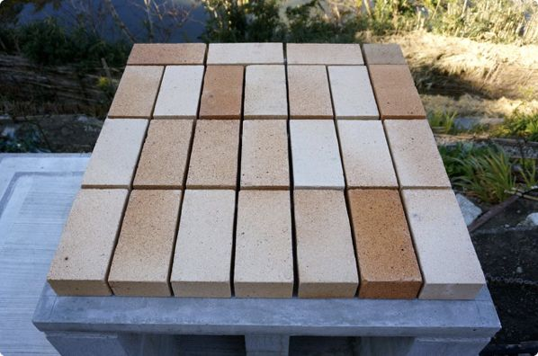
こんな感じ。全体のサイズを測りながら耐火ブロックを並べる枠の線を引いたり、目地の幅を調整したりしました。
アサヒキャスターを練って、ここでも1㎝の角材を使って1㎝にならしました。
ここにすばやくブロックを戻して、なんとなく水平を取りながら、レンガとレンガの間に目地バックでアサヒキャスターを絞っていきます。
目地の細いところは、アサヒキャスターが入りづらいので
、
その都度コテやヘラで押し込みなが
ら
入れていきます。"その都度"じゃないとアサヒキャスターが固まってしまってコテやヘラで押し込めなくなります。
指でしっかりと押さえて、濡らしたスポンジでこすってならします。
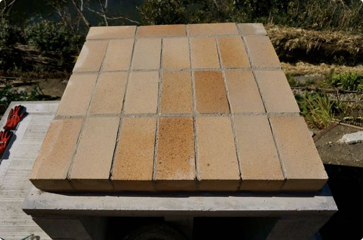
火床が完成。
火床の上に1段目を積んでいきます。角材を使って、目地幅を調整しながらのせていきます。
上に行けば行くほど大きく傾いちゃうので、水平だけはある程度とっていきました。ある程度です。
目地バックで詰めて、
指でならして、スポンジワーク。
1段目が積めました。
1月の寒空の中で二人で作業をしていても、アサヒキャスターのかたまり具合は速いです。ので 、 一段分積むくらいのアサヒキャスターをちょっゆるめにその都度練りなが ら やっていました。日差しがあると、急に固まるのが早くなります。夏なんてどうなっちゃうんだろ。あくまで素人の感想です。
同じようにして2段目も積んでいきます。
2段目も積めました。
3段目は焼床をのせるカットしたレンガを積みました。
正面から見ると、
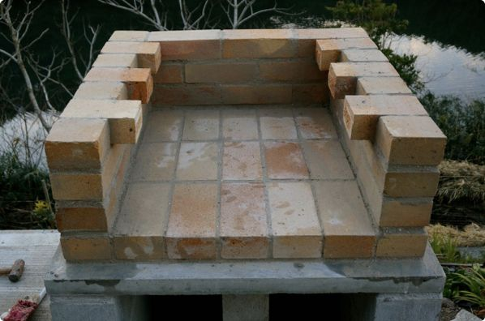
こんな感じです。だいぶボリュームが出てきて、それらしい感じが漂ってきたような。
4段目。
5段目。
5段目の前側はまだ積みません。
6段目。

6段目も前はまだ積みません。
ここで焼床登場です。とりあえず、仮置きしてみました。
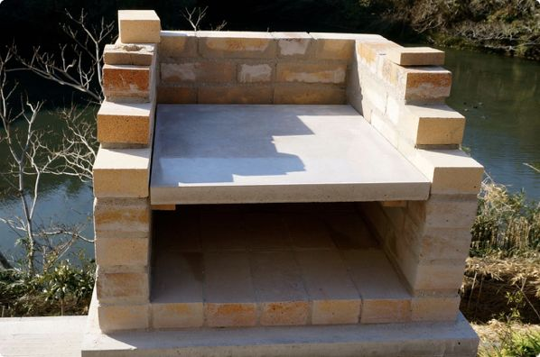
なんちゃって設計図
では、焼床の下に何かをかまして4段目のレンガと同じ高さにする予定だったのですが、そうすると、飛び出している焼床をのせるレンガ6箇所の高さを調整しなくちゃいけないので、予定を変更して、まずはこのまま焼床を取り付けることにしました。
飛び出したレンガにアサヒキャスターをのせて焼床を固定します。下からのぞくと、

こんな感じになっています。焼床を手前に合わせにすると、奥
が
5㎝ほど空きま
す
。この隙間から熱が上がって来る予定です。
焼床の両サイドもアサヒキャスターで埋めました。
6箇所の飛び出たレンガで高さの調整をする代わりに
、
一番前に薄いレンガを入れて高さを調整す
る
ことにしました。
薄いレンガを作ります。半マスのレンガをスライスします。
こんな感じにカットします。
ディスクグラインダーで切りつけて、
タガネでとりゃ〜！
あ、割れちゃった。。。
でも、アサヒキャスターで挟むので割れちゃっても大丈夫。キッチリ合わせて使いました。
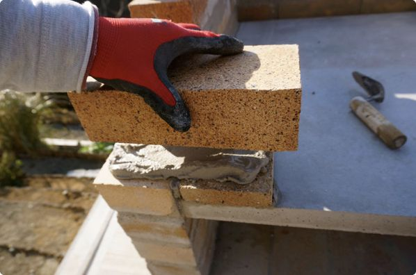
スライスしたレンガを焼床の一番前のところにアサヒキャスターで固定して、その上に5段目の前部分を積みます。
その上に6段目の前も積みます。
６段目の半マス分開いているところは後で積みます。アーチのかまぼこ木型を取り外せるようにあけておくことにしました。
わりといい感じにここまで積めています。
ピザ窯のレンガをアーチに積む
ピザ窯作りもいよいよ佳境に入ってまいりました。
ピザ窯のアーチ部分 は 男のロマンでもあるのですが、一番の不安でもあります。
かまぼこ木型はちゃんとサイズあっているかな。クサビでちゃんと角度調整できて予定通りの数のレンガがちゃんと入るかな。上手くレンガを積めるかな。最後、かまぼこ木型はちゃんと抜けるかな。などなど。
ま、やったことないのだからいくら考えたってしょうがないのですが、少しでもうまくいくようになんかいい方法はないかなーとつい考えてしまします。
さて、ピザ窯のアーチ部分に耐火レンガを積んでいきますよ。
まずは、レンガをアーチに積むため
の
かまぼこ木型を置く高さを調
整
します。
レンガをこんな風に置いて、その上にかまぼこ木型をのせました。
横から見ると、こんな感じです。
半円の一番下のところがレンガの積み始めのところと同じ高さ
に
なっています。
とりあえず試しに仮積みしてみました。
計算して作っておいたクサビ
をかましながら積んでいきます。
前面だけですが、ぐるっとアーチになりました。
横から見るとこんな感じ。
ただ仮り積みしただだけなんですが、ちゃんと予定通りレンガがアーチになって、テンション上がります！
アーチ積み本番の前に、かまぼこ木型にビニールを貼りました。

ひらいた半透明のゴミ袋
を
タッカ
ー
（ホッチキスみたいな奴）でバチンバチンととめていきます。ビニールを貼ったのは後で木型を抜きやすくするためです。
まあ、木なので外れなければ燃やせばいいのですが、スッと外れたほうが時間がかからなくていいし、完成前に汚れなくていいし、ということでビニールをしました。
ビニールで覆ったかまぼこ木型をのっけて、
クサビがある分だけのレンガをぐるっと左右から積み上げました。
ピザ窯の背面にはかまぼこ木型が無いの
で
、レンガやら石やら、そのへんに落ちてる板なんかを詰め詰めしてアーチが歪まないようにしました。
クサビを押しこんだり、引いたりすることで角度が調整できるので、それほど几帳面にクサビを作る必要はなかったのかもしれません。
ここに目地バッグ（本当はケーキ用の絞り袋だけど）
で
かなりゆるめに練ったアサヒキャスタ
ー
を入れ込んでいきます。
奥の方は狭いのでなかなかアサヒキャスターが入っていかないのですが
、
コテやヘラでつつきながら少しでも入れていきま
す
。さらに指でもぐいぐい押し込みました。
ある程度、固まってきたらクサビを抜いて、
抜いた穴にアサヒキャスターを絞り入れていきます。抜けにくいクサビはペンチでグイグイやると抜けます。
クサビを全部抜いて、穴もしっかり埋めたら、残りのブロックを積んでいきます。
上から見るとこんな感じです。
煙突用の穴が開いています。
この時、背面はこんな感じになっています。
同じようにしてアサヒキャスターを絞って詰めて、ヘラでシャコシャコして、指でぐいぐいして、残りの目地をガンガン埋めていきました。
アーチ部分、完成！
斜めから見ると、
ちょっと凹んでいる目地もあります
。
アーチ部分の目地にはめちゃくちゃアサヒキャスターを使っ
た
ので、足りなくなってしましました。
アーチの目地にたくさんアサヒキャスターを使うというのは、いろんな人がブログで言っていて、一応知ってはいたのですが、、、
ここまででアサヒキャスター6袋が終了です。1袋ネットで追加注文しました。
追加したアサヒキャスターが届いたので、ピザ窯作りを再開です。
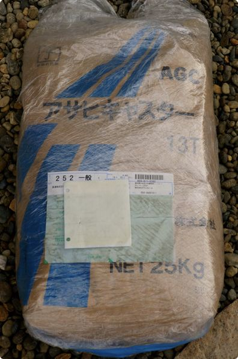
がしかし、このネットで追加したアサヒキャスター、今までのアサヒキャスターと様子が違いました。
粗い。
貝殻？の粒がデカイ。粒がデカイと目地バッグで絞りづらいし、細い目地には全然入って行きません。ここに来て作業の進みが格段に遅くなってしまいました。
そんでもって、綺麗に仕上がらない。ま、腕のせいもありますが、、、仕方ない、そういうこともあるんだ、と割りきることにしました。
※ 「アサヒキャスターが粗くて手こずる時には、ザルで漉すとうまく行きました 」 とこのピザ窯の作り方を参考にしてくださった方にアドバイスを頂きました。
ピザ窯の背面のレンガを積んでいきます。
こんな感じに、目地の代わりにクサビを挟んで、見えにくいかもしれませんが、アーチと並行になるようにレンガにカットする線を鉛筆で入れました。
一番上の部分も、
こんな感じに線を入れて、ディスクグラインダーとタガネを使って、えっちらおっちらカットしました。細くなるところは割れちゃったりするかな、と思ったのですが、意外とキレイにカットできました。
カットしたレンガを仮置きしてみます。
おお〜、いい感じです。一番上の両サイドは、切ったレンガの切り落としを入れることにしました。
この通りにアサヒキャスターを練って積んでいきました。一番上の部分はハンマーでゆっくり打ち込んでいくようにして入れ込みました。
背面が完成しました！
写真でNEWなアサヒキャスターの粗さが伝わりますかね？前のアサヒキャスターを使った一番下の目地と比べると、明らかにツブツブが多いです。
見た目は、まあいいとして、ほんと絞りにくい、入れ込みにくいんです。。。
アサヒキャスター（送料込み）1袋 4530円
今度は前面のレンガ積みです。の前にこれまでアーチ部分を支えてくれていたかまぼこ木型を外します。
下の支えのレンガを抜き取って、グリグリを木型を揺すると、
簡単に抜けました！ビニール無しでやったことないから、分かりませんが、ビニールのおかげってことにしとこう。
中を覗いてみると、
うーん、予想はしていましたが、やっぱり、目地に隙間があります。
この目地の隙間に練ったアサヒキャスター
を
手でグリグリグリグリと押し込
み
ました。ほっそい目地には入って行きませんが。。。

とりあえず、これでよしとすることにしました。
さて、ピザ窯の前面のレンガの積み方はすごく悩みました。2層式のアーチ型のピザ窯の多くは鉄製の扉をつける人が多いんですけど、板金屋の友だちもいないし、鉄の加工となるとまたハードル上がっちゃいます。
なので 、 鉄の扉を作らなくてもいいように焼床の口の部分を小さくするにはどうすればいいんだろ ー と。
で、出した答えが 、 前面にロングなレンガを渡して下の支えを作 る という積み方です。
1個2380円の高級耐火レンガの大判レン
ガ
です。
これを縦にカットします。
1個の値段が高いし、割れたらどうしよ～とビビリながら切りましたが、思っていた以上にキレイに切れました。
大判のレンガを縦にディスクグラインダーでカットした動画です。
ディスクグラインダーで大判レンガを切る動画（YouTube）
無事、カットできた大判レンガを、更に長さをピザ窯に合わせてカットしました。
かまぼこ木型を抜くために積んでいなかった前面の両サイドに半マスのレンガとカットした大判レンガ
を
積みました。
これで、下の支えができたので、あとは背面と同じようにしてカットしたレンガ、を積んでいきます。
前面の目地のところに温度計を挿すための穴を開けるはずだったのですが、レンガ積み終盤で疲れていてすっかり忘れてしまいました。
木の棒か何かを突き刺しておいて、アサヒキャスターが固まる前に引っこ抜けば、簡単に温度計用の穴ができると思うのですが。
目地バックでアサヒキャスターを絞り込んで、指でしっかり押さえて、スポジワークをして、穴は開け忘れたけど前面完成！
残すは煙突のみとなりました。
煙突 は 「レンガ 」 にするか、薪ストーブに使うよう な 「ステンレスの煙突パーツ 」 を使うか最後まで迷いましたが、レンガで短めの煙突をとりあえずつけることにしました。
ピザ窯をつくっている場所は海から結構近く、風が強い日はものごっつう強いので、ステンレスの煙突を何の支えもなしに立てるだけというのはちょっと不安。ということで、短めのレンガの煙突をつけて、必要なら後でその上に煙突パーツを取り付けることにしました。
それと 、 ダンパー（煙突の空気の通り道を遮断したり、量を調節したりするもの）を設置するのもレンガのほうが簡単そ う だったので。
煙突に使うレンガは耐火レンガを縦に切って、
焼床をのせるために切ったレンガの切り落としを更にちょっと切ったもの
を組み合わせて、
こんな感じにして2段だけ積みました。
難しいところは何も無いはずなんですが、いかんせん、アサヒキャスターが粗い。。。
キレイに整えよう、整えようとスポンジワークを頑張れば頑張るほど、どんどん粗さが目立ってきてしましました。
こ
の
前面に開いている細い穴に板状のものを差し込んで、ダンパー
に
します。一番温度の高いところについてる煙突が開きっぱなしだと、ピザ窯の温度が上がりにくいですもんね。
実際に使うときには、煙突の上に蓋をしちゃうんですが、この先、ステンレス製の煙突を取り付けることがあれば、この穴を使います。
正面からのピザ窯。
斜めからのピザ窯。
よし！ピザ窯、完成！！
ピザ窯作りにかかった日数と感想
ここまでのピザ窯作りに掛かった日数はこんな感じです。
重量ブロックとかの買い出し
半日
ピザ窯の土台の制作
2日と4時間くらい
ピザ窯の木工作業
1日
耐火レンガとかの買い出し
3時間くらい
ピザ窯の耐火レンガ積み
4日と半日
嫁と2 人 、素人が朝9時とか10時くらいから、日が暮れて作業ができなくなるまで、お昼ご飯以外はがっつり作業をして、実働として は 延べ10日弱くら い でした。
この実働の日数以外にどうやって作ろーかなーとピザ窯の本を読んだり、ネットで調べたり、ホームセンターに材料とか道具を見に行ったりしている時間がけっこう長くあります。なので、今こうして振り返ってみて作業していたのが10日という短い感じは全然しません。
僕の場合、ピザ窯を作ったのが自宅から離れているところで、通いながら作っていた事もあって、実際には作り始めてから完成するまで2ヶ月半かかっているからかもしれません。
ピザ窯を作ってみたい、家庭のオーブンじゃ上がらない温度でナポリピッツァを焼いてみたい！いつかは。と思っていたところに立派なピザ窯建設予定地をあてがわれ、なかば背中を押されながら作ることになったピザ窯。
ピザ窯の作り方を調べれば調べるほど、けっこう大変そうなことが分かって、ますます尻込みしたのですが、いざやってみる と 意外とけっこうできるもんだ な と思いました。
モルタルを練ったり、レンガを積んだり、初めてのことが多かったので、大丈夫かな〜とピザ窯の夢を見ることもありました。けれど、ちゃんと手順通りやっていけば、大きな問題もなくピザ窯を完成させるところまで行けました。
ピザ窯作りは、それなりの時間とお金をかけて作るので、できれば失敗したくありません。なので 、 どうやったら失敗せずに素人でもそれなりのピザ窯になるか？を考えるところが一番大 変 でした。
あそこのホームセンターで売ってる材料を使って、こーゆー感じで作っていこう、というのが決まればあとは作業なので、えっちらおっちら組み上げていくだけです。
それから、2人で作業したのは良かったです。特にアサヒキャスターを使って耐火レンガを積んでいくところは、アサヒキャスターの固まりが速いので、1人が詰める、1人がならす、みたいにやれたので。経験者がいたり、友達同士で人数集めて作ればもっと期間も短く、もっとキレイに仕上がると思います。
今後はこのピザ窯をもっと使いこなしてもっと美味しいピザやら、ダッチオーブンで美味しい料理を作ったりしていくのがとっても楽しみです。
一家に一台、素人の僕にもできたピザ窯作りにチャレンジしてみませんか？
ピザ窯作りに使った材料とお金
ピザ窯の作り方の説明の中でも、その都度ちょこちょこと書いていましたが、ピザ窯作りに僕が使っ た 材 料 に掛かっ た お金のこ と をまとめてました。
浪漫あふれるピザ窯作りですが、現実問題としてそれなりのお金がかかる、といういやらしいお話です。
ピザ窯の土台に使ったブロック。12㎝幅と15㎝幅の重量ブロックを組み合わせて使いました。
12㎝の重量ブロック
＠138円×12個＝1656円
15㎝の重量ブロック
＠188円×12個＝2256円
基本の形の耐火レンガの他に耐火レンガをずらして積んでいくのに、半マスの耐火レンガも買いました。
前面を塞ぐために大判レンガも購入して、カットして使いました。
SK-32基本の形の耐火レンガ
＠168円×135 =22680円
耐火レンガ 半マス
＠168円×36 =6048円
耐火レンガ 大判 2380円
セメントと砂を混ぜて練るモルタル。ピザ窯の土台として重量ブロックを積むのと、その土台の天板を作るのに使いました。
セメント ＠398円×3袋＝1194円
砂 ＠218円×9袋＝1962円
ピザ窯作りで耐火コンクリートのアサヒキャスターというものを初めて知りました。そして、これが結構お値段がします。最終的に7袋使って、耐火レンガと同じくらいの金額になりました。
アサヒキャスター ＠3888円×6 = 23328円
アサヒキャスター（送料込み）1袋 4530円
石窯なはずのピザ窯なのですが、けっこう木材使う木工作業もありました。
【土台の木枠】
イエローコンパネ 1520円
24×48×3985㎜角材 350円
ホワイトウッド 1×3 6ft 696円
ワイヤーメッシュ 350円
木材カット代 ＠30円×４=120円
【焼床の木枠】
30 × 40 × 3000㎜の角材 448円
【アーチのかまぼこ木型クサビ】
11㎜の合板 1111円
2.4㎜の合板 498円
スリムビス25㎜ 198円
木材カット代 450円
【レンガ積みの目地よう角材】
1㎝の角材90㎝ ＠133円×2=266円
この他に、家にあった長めの木ねじも使いました。
普通は鉄筋をホームセンターでカットすればいいだけなので、数百円で済むところだと思います。
鉄筋アンカーD13 ＠128円×8本＝1024円
あーーー、計算するのが怖い。でも、もう使っちゃったんだから今更怖いとか言ってもしょうがない。。。合計金額は、、
73065円（税込）
ピザ窯作りに使った道具に掛かったお金
僕がピザ窯作りを始めようと思ったとき、どんな道具が必要なのかな〜？全部揃えるとなると道具だけでも結構な金額になっちゃうのかな〜？なんてことが気になったので、ピザ窯をこしらえる時に使った道具類とそれにかかったお金についてまとめました。（タイルを貼る前までに使った道具です）
ピザ窯作りに僕が使った道具には、もともと僕が持っていたものと、ピザ窯作りのために新たに買ったり、ホームセンターでレンタルしたりしたものがあります。
ここではピザ窯を作る時に使った道具のうち、僕がもともと持ってた道具については参考金額ということでカッコで囲って書きました。
ピザ窯を作る時にいくつかの電動工具を使いました。電動工具はあるとやっぱり便利です。いろんなことが早く、キレイにできます。
ですが、電動工具はそのパワーゆえ、大きな事故が多いのも事実です。特に僕のような素人はほんとに気をつけて使わなくちゃいけません。
電動工具は買わなくても数百円でホームセンターで借りられます。
（レンタル 1泊2日で300円くらい）
（買うと 5000円〜15000円くらい）
ピザ窯作りの中では丸ノコについてはあまり触れていないのですが、ちょいちょい使っていました。
板状の天板や焼床を作るのにモルタルやアサヒキャスターを流 す 木枠を作った り 、ピザ窯をアーチ状にするため に かまぼこ型の木型を作った り、 クサビを作った り する時に丸ノコを使います。
丸ノコでできることは普通のノコギリでもできます。でもやっぱり、あると何かと便利です。固いコンパネをカットしたり、クサビをたくさん作ったりするのをノコギリでやるのはやってできないことはないと思いますが、相当大変だと思います。
ホームセンターでレンタルすれば1泊2日で数百円なので、木工作業をまとめてやってしまうというのも手です。僕は丸ノコを持っていますが、それでも、なるべくホームセンターでカットできるところはカットしてもらいました。ちょっとでも楽しようと思いまして。。。
（レンタル 1泊2日で300円くらい）
（買うと 2000円〜10000円位）
これもピザ窯作りの木工作業で使います。木枠やかまぼこ木型を作る時にドライバードリルを使って木ねじでとめます。簡易コンパスを作った時にも穴を開けるのに使いました。
ホームセンターで安く借りられます。が、家にあると何かと便利な道具なので、買ってもいいかも。
マキタ 9533BL 9300円
ダイヤモンドカッター1280円
今回のピザ窯作りで購入したディスクグラインダー。
ディスクグラインダー は レンガを切 る のに使います。ディスクグラインダーで切込みを入れて、その切り込みにタガネを入れてハンマーで叩いて、切るというか、割るという感じで、切ります。
僕は買って良かったです。ディスクグラインダーは大活躍でした。"レンガを切る"のは、ピザ窯を作る上で欠かせない作業になると思います。もちろん、これもホームセンターで借りられます。1泊2日で数百円です。
レンタル2泊3日 300円
(買うと3000円〜10000円位)
ジグソーは曲線を切ることができる電動のこぎりです。ピザ窯のアーチ部分のレンガを積むためのかまぼこ型の木型を作るのに使います。板
を
半円にカットす
る
時にジグソーを使いました。
取り回しも良くて、とっても使いやすかったです。ピザ窯作りでは、半円の板を切り出すところしか使わなかったので、1日しか使いませんでした。
振動ドリル1泊2日レンタル 500円
コンクリート用ドリル18㎜ 1780円
ピザ窯の土台を設置するコンクリートに穴を開けるのに使いました。が、おそらく普通に土の地面にピザ窯を作るなら登場しない電動工具です。僕がピザ窯を作ったのはコンクリートの地面の上だったので、鉄筋をコンクリートにぶっ刺すために、振動ドリルで穴を開けました。
ピザ窯作りに使った電動工具以外の道具たちです。道具はあればあったで便利ですが、全部を新たに買い揃える必要もないと思います。工夫すれば色んなもので代用できたりもしますしね。
（1000円〜5000円くらい）
モルタルやアサヒキャスターを練る入れ物。クワや、スコップでモルタルなどを練るならこれは必要。僕が使っていたの は 80Lのトロ 舟 です。
（1000円〜2000円くらい）
モルタル、アサヒキャスターを練るためのクワです。僕はこれのほうがやりやすかったけど、スコップでも全く問題ありません。軽くて使いやすいクワは左官鍬（さかんくわ）と言うらしいです。
（100円〜）
関東で言うシャベルです。小さいやつ。モルタル、アサヒキャスターを練る時、トロ舟の角っちょをガリガリこそいだり、ブロック、レンガに練った物をのせたり。
ブロックコテ 300円
（100円〜）
僕はなんだか無駄にコテを持っているのですが、モルタル、アサヒキャスターで板を作ったり、ブロックやレンガを積んだりする時に、ならすように一個はあったほうがいい。
（800円〜1500円くらい）
積んだブロックやレンガが、ちゃんと水平になっているか、垂直に積まれているかがひと目で分かる道具。線と線の間の真ん中に気泡が来るようにします。目で見ただけだと意外と水平・垂直って分かりづらいので、あったほうが良い道具です。
（100円〜）
何かと叩きます。レンガを切る時にタガネを叩いたり、水平をとるのにブロックやレンガを叩いたり。ゴムハンマーや木槌なら直接コンコン打てるのでよりやりやすいかも。
僕は金槌しかなかったので、ボロ布や軍手を当てて叩きました。けれど、100円ショップでも売っているので買えばよかった。
ブロックタガネ 75㎜ 1080円
（レンガタガネ 600円〜）
レンガをカットする時に使います。ディスクグラインダーで切込みを入れて、タガネをさして、ハンマーでコンコンやってレンガをカットします。バールでやっている人も動画で見かけたことがあります。
絞り袋 ＠298円×２ 596円
アサヒキャスターを絞ってレンガを積んでいく時に使います。結局、目地バッグを見つけられませんでした。なので、僕はケーキのデコレーションに使う絞り袋で代用しましたが、全く問題ありません。後日、モルタルパックという名前ネットで見つけました。
（100円〜）
使いふるしの台所のスポンジで十分です。ブロックやレンガを積んだ目地を、濡らしたスポンジでゴシゴシやるとキレイに仕上がります。
（100円〜）
ホームセンターにピザ窯作りの材料を探しに行くところから、常に携帯しておくと何かとすぐ測れるので便利です。ま、ホームセンターにも置いてあるんですけどね。ピザ窯の土台をブロックで積んでいくところから、メジャーを使って、幅をチェックしながら作業をしていきました。
（300円〜1500円くらい）
ちょいちょい鉛筆で印をつける時に使います。カットする木材とか、レンガとか。もちろん、普通の定規で大丈夫です。
ピザ窯を作るときの格好
好きな格好でピザ窯を作ればいいんですが、あんまりDIY的なことをしない人が一念発起してピザ窯作ろう！ってなときに何かの参考になれば、、、と。
（200円くらい〜）
軍手じゃなくて、作業用の手袋。ブロックやレンガを運ぶ時にしっかりグリップするので
、
軍手とは疲労度が格段に違いま
す
。濡れても、作業しやすいですし、数百円だし。サイズが色々あるので、自分に合ったぴったり目のサイズを選びます。
（1000円くらい〜）
長靴でも地下足袋でも。とにかく、モルタルまみれ、アサヒキャスターまみれ、レンガの粉まみれになります。
汚れても良い服装ってことなんですけど。電動工具を使うなら、長袖、長ズボン、そしてヒラヒラしてない格好。ヒラヒラ、ブカブカが電動工具に巻き込まれたらアウトです。
（300円〜1500円くらい）
レンガをディスクグラインダーでカットするときに使います。結構な粉塵とともに粒々も飛んできます。
（300円〜1000円くらい）
これもレンガをカットする時に使います。メガネと防塵マスクは面倒でも、レンガを切るときは必ず着けるようにしました。目や口にレンガが入るのを防ぐのはもちろんなんですが、目に入った瞬間、吸い込んでゲホッとなった一瞬にディスクグラインダーが反発したら大怪我しちゃいますからね。
僕がピザ窯作りのために買ったり、借りたりした道具に掛かった金額の合計は、、、
14836円
半分以上がディスクグラインダーを買った金額なので、ディスクグラインダーをレンタルにすれば道具代はそれほどでもない感じ。
ピザ窯に掛かった全金額は、
材料費 73065円
道具費 14836円
合計 87901円
となりました。
けっこう掛かった、といえば掛かったと言えるし、作る楽しみもあって、この先ほぼ一生もの（のはず）で、ながーく楽しめると考えれば、妥当と言えなくもない金額だと思います。
僕が参考にしたピザ窯の本で見ても、ネットで見ても 、 ピザ窯作りに掛かった費用というのはほんとうに人それぞ れ です。作るピザ窯の規模も違えば、材料などがただとか、格安で手に入る人もいるので、7000円という人もいれば40万円という人もいます。
普通にホームセンターで材料を買って、僕が作ったくらいの規模のピザ窯を作るとこのくらい掛かるよ、という目安にしていただけたらと思います。
ピザ窯の設計図とか
ピザ窯を作リ始める前に、僕はこんな感じのピザ窯を作っていくつもりだよっていう図、設計図みたいなものを書きました。
とりあえず下書きとし て 書きながらイメージを作ってい く 感じで書いていた下書きがそのまま設計図になっちゃいました。
ちなみにピザ窯の土台部分の図はこんな感じです。
ヒドイ。。。でも、ブロックを3段積むだけなので、これでもいけました。
ピザ窯本体部分の設計図はこれよりはマシですが、完全フリーハンドです。人様に見せられるようなものではないのですが、こんな程度の設計図でもピザ窯が完成するんだ、と思っていただければ幸いです。
まずは、土台の上に並べ る 火床（薪を燃やすところ）の部分に耐火レン ガ をいくつ、どうやって並べるかっていう図です。
ピザ窯の土台
が
900㎜×900
㎜
（90㎝）なので、そこに収まるようにレンガを並べます。
一番上のやつは今回使う耐火レンガのサイズです。普通サイズのレンガと半マスのレンガを使います。
並べてみて目地の幅を決めました。
下の四角 は 焼床のサイ ズ です。ピザをのっけて焼く部分です。このサイズの木枠を作って、そこに耐火コンクリート（アサヒキャスター）を流して耐火コンクリートの板を作ります。
で、今度はレンガを上にどんな感じで積んでいくのかっていう図を書きました。
こんな感じで積んでいきます。
耐火レンガを何段積んで、火床の板を乗せる部分をどうするか、と前面の穴をどうやって塞ぐか（小さくするか）を書いています。
そして、いよいよアーチ部分の図です。
アーチにするのに一列に何個のレンガが必要なのか、レンガをアーチ状にするため
に
レンガとレンガの間にかます楔（くさび）の角度なんかも計
算
しました。
そんで、アーチ部分に普通のサイズのレンガと半マスのレンガをいくつ使うのかを数えるための図を書きました。
計算方法もあるのかもしれませんが、よく分からないので図に起こして数えました。四角い穴は煙突の穴です。
アーチの部分の設計ができたら、アーチにレンガを積むための木枠の図を書きました。
この図は計算上のミリ単位でピッタリのサイズになっています。実際にはこれよりほんの少し小さいサイズにしました。ビタのサイズで中に入らないのが一番どうしようもないので。
で、最後にレンガ積みのイメージ図を書いて必要なレンガの数を出しました。
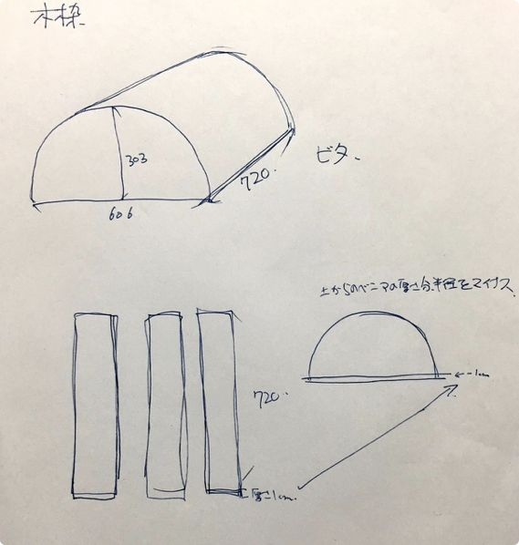
アーチ部分の前面と背面を塞ぐレンガはちょっと多めに見積もって、あと煙突に使うレンガも足して、僕の計算では普通サイズのレンガが132個、半マスのレンガが32個ということになりました。
この数にちょっと予備を加えて、耐熱レンガをホームセンターに注文しました。必要なレンガの数を割り出すために設計図を書いたと言っても過言ではありません。
いくつ使うか分かんないと注文できませんもんね。
ピザ窯のアーチ部分ってどうやって作るんだろ？適当に乗せていくの？イヤイヤ、その前に木で枠作んなきゃいけないんだからちゃんと計算しなくちゃいけないんだよね。。。？
僕が買ったピザ窯の本にも、ネットで探してみてもアーチ部分の計算の仕方とかレンガをアーチに積む時に使うクサビの作り方（計算の仕方）が見当たりませんでした。
見当たらないんです が "計算通りにレンガのアーチを組んで " と か "計算した角度のクサビをかまして " というのは見かけるので、みんななちゃんと計算してるんだと思います。
この方法で合っているのかどうかは分かりませんが、僕が一応なんとなくした計算の仕方です。
まずはアーチ部分の木枠ですが、僕 は 普通に半 円 を組みました。
ピザ窯の下の部分（火床、焼床）のレンガの数、目地の幅などから計算したアーチの半円の直径は606㎜で、高さは半円なのでその半分の303㎜です。
入らないと困るのでちょっとだけサイズを小さくして
、
直径を600
㎜、
半径を300
㎜
としました。
レンガのサイズは、長さが230㎜、幅が65㎜、奥行きが114
㎜
です。
アーチを組むときは65㎜×114㎜の面を前にして縦にぐるっと積んでいきます。
こんな感じのイメージです。あくまでイメージです。サイズとか、角度とかはこの図は適当です。
アーチの内側の半円の直径は600㎜（60㎝）です。
円周を求める公式 は 2×3.14×半 径 なので、半円の円周の長さは
2×3.14 × 300㎜ ÷ 2（半円だから）＝951.42㎜≒952㎜（だいたい952㎜）
内側の半円の円周が952 ㎜ 。
952㎜にレンガをいくつ並べられるかといいますと、
952㎜÷65㎜（レンガの幅）＝14.6461....
並べられるレンガ は 14個とちょっ と 、ということです。で、残りのちょっとは目地の数で割って均等に内側のレンガとレンガの間の目地幅を計算します。
952㎜（内側の円周）--910㎜（レンガ１４個の幅の合計）=42㎜
42㎜÷15（目地の数）=2.8㎜
アーチのレンガ の 目地の内側の幅は2.8 ㎜ となりました。
なりました、って言っても2.8㎜ですからねー。きっちり2.8㎜で積むなんてことができるとは思っていません。クサビを作るときの一応の計算です。
今度は外側の円周を計算します。
こんな感じです
。
直径は両サイドにレンガの長さ分、114㎜ずつ伸びたってことで、直径は834
㎜
、半径
は
その半分で417
㎜
です。（外側の計算の時は内側直径は606㎜にしました）
2×3.14×417㎜÷2=1309.38≒1310㎜
外側の円周は1310 ㎜ 。内側と同様にそこからレンガの幅を引いいて、目地の数で割ります。
1320㎜--910㎜（レンガの幅の合計）=400㎜
400㎜÷15（目地の数）=26.666.....
アーチ の 外側の目地の幅は26㎜くら い ということになました。
レンガとレンガの間の目地、クサビの形はこんな感じになります。
外側の26.6666....㎜は26㎜にしています。内側の2.8㎜はそのままにしていますが、実際はのこぎりで小数点以下のレベルまでキッチリ切ることは出来ませんし、やる意味もないと思っています。だってレンガの大きさもけっこう適当といいますか、モノによって違ったりするので、一応の計算です。
困るのは目地を大きく取り過ぎて、レンガが、ちゃんと14個入らないことなので、クサビは気持ち小さめ小さめに切っていきます。
で、このクサビを作るのに図にあるように"？"のところの角度が分からないと作れません。
この計算がめんどくさい。
緑の補助線を引いて、クローバーのとことの角度を求めます。
えっとーーー、図が適当なので分かりづらいですが 、 Aの部分は下と同じ長 さ です。なので、
(26㎜ -- 2.8㎜)÷2=11.6㎜
11.6㎜がAの長 さ になります。
こっからサインコサインタンジェント的なことが出てくるのですが、大丈夫です。
という便利なサイトがあるので、ここに補助線を引いたことでできる直角三角形の底辺（11.6m㎜)と斜辺(114㎜)を入れると、Bの長さと♣の角度がいっぺんに出てきます。
Bの長さが113.40 ... 。
♣の角度 θが84.15...
度
。♣の角度は"？"の角度と一緒なので、作るクサビはこんな感じのはずです。
これがあっているのか、それとももっと簡単な方法があるのか、はたまた、こんな計算なんかしなくたってアーチに積めるのか、はまったくもって分かりませんが僕はこんなふうに計算しました。
何度も書いてますが、一応の計算です。実際には㎜単位できっちりこなすことは無理でしょうし、作業の目安くらいの感じで使っていこうと思っています。
目安にしては面倒くさかった。。。
このあと僕はピザ窯にタイルを貼ったのですが、タイルを貼らない人も多いと思うので、タイル貼りは後回しにして、ピザ窯に火入れをしつつ、ピザ窯でピザを焼いた様子をお届けします。
これがまた一筋縄では行きませんでした。
ピザ窯で焼くナポリピッツァの作り方
なんとかかんとか形になったピザ窯でピザを焼くのですが、せっかくそれなりの時間とそれなりのお金をかけて、それなりのピザ窯をこしらえたのだから、それなりに美味しいピザを焼きたい。
というわけでまず は ピザ生地の作り 方 からです。
僕が作りたいのは " ナポリピッツ ァ "。コルニチョーネと呼ばれるぷっくりと膨らんだフチが外はカリッと中はふっくらモチっとしているピザです。
ピッツァの美味しさの半分、い や 8割は生地にかかってい る と言ってもいいくらい生地は大事だと思います。
【200gの生地4枚分】
00粉 430g
スーパーカメリア 70g
塩（ゲランド）
15g
生イースト
1g
水 300cc
(オリーブオイル 40〜50cc)
小麦粉
00 粉 はゼロゼロコと僕は呼んでいるイタリアの粉です。イタリアの粉は精製の度合いによって、数字で小麦粉が分類されています。日本のように薄力、強力といった分け方ではないんです。
ピザの生地には00粉を使います。イタリアの粉は風味もあって美味しいです。おそらくその辺のスーパーにはなかなか売っていないものだと思いますので、ネットで注文。
カプート社のサッコロッソ
という名前
の
00粉にスーパーカメリアを少し加えて、コシをだします。スーパーカメリアはスーパーな(グルテンが強い）強力粉です。
塩
塩は ゲランドの塩 を使いました。わざわざゲランドの塩を買うこともないと思いますが、いわゆる"食塩"は避けて、美味しい塩を使うほうが、それなりに美味しいピザに近づくんじゃなかろーかと思います。
ちなみにゲランドの塩を使われる場合はセルファン（細かい塩）を選んでください。グロセルはツブツブのお塩です。
イースト
イーストは天然酵母をおこすか、生イーストにするか、ドライイーストにするか迷ったのですが
、
生イース
ト
にしました。
なかなか少量では買えない生イーストですが、富澤商店に100gに小分けしたものがあったので、それを注文。まあ、100gでも上の分量で100回分なんですけど、、、残りはパンに使うことにします。
生イーストの中身はこんな感じです。
この状態の時は匂いはしますが、焼くとドライよりイースト臭が少ないと思います。
生イーストは、多少発酵力が落ちるかもしれませんが、使うグラムに量ってラップで包ん で 冷凍できま す 。
水は、うちにあったペットボトルの水です。
オリーブオイルは、生地に入れないのが本格的なナポリピッツァらしいです。今回は一回目は入れずに、二回目は入れて作ってみました。
オリーブオイルを入れたほうが、全体的にサクサク感は出るような感じがします。ピザ窯の温度を高温（400度くらい）に上げられないなら、オリーブオイルを入れたほうがいいかもしれません。
ピザ生地を発酵させるのに 、 常温（25℃）で7〜8時 間 掛ります。
朝6時からピザ生地作り始めて7時から発酵に入ったとして、焼けるようになるのが午後2時とか3時とかです。
それはキビシイ。。。
ので 、 4時間常温で発 酵 させた後 、 冷蔵庫に入れてゆっくり低温発酵させ て 、当日 の 焼く1、2時間前に常温に出して生地をもど す 。という方法にすることにします。
ピザ生地を作り始める前の準備として 、 粉と水を冷蔵庫でよく冷やし て おきます。そうすることで、質の良いグルテンができます。
生イーストを計量するのですが、うちの秤はとっても優秀で１gがなかなかちゃんと量れません。なので、生イーストを10g計量して、10等分（だいたい）することにしました。
大きめのボールに00粉とスーパーカメリアと塩を入れてよく混ぜ合わせておきます。
冷水を300cc量ったところに、生イーストを入れて、溶かしておきます。
粉の真ん中をくぼませて、
そこに生イーストを溶かした冷水を注いでいきます。
生イーストが容器に残らないよう
に
気をつけて入れます。
オリーブオイルを入れる場合はこの時点で水と一緒に粉に入れます。
これを内側からグルグルと崩すようにして粉と水を混ぜ合わせていきます。
最初はドロッとした感じですが、水分が粉にある程度合わさると
こんな感じにまとまります。
これを手の平の手首に近い部分でグイグイ押し込んでは、生地を起こしながら捏ねていきます。結構大変です。ピザの本とか に 20分以上よく捏ね る と書いてありますが 、 僕は30分以上掛かりまし た 。
時間よ り 生地の状態を見 る のがいいと思います。
これホントに大変です。何度も時計見ちゃいます。えっ!まだ5分？
10分捏ねた状態です。
計20分捏ねた状態です。
おいおい、10分前とぜんぜん変わってないじゃないか。
さらに15分、最初の20分より激しくいつもより多めに捏ねまして、計35分捏ねた状態がこれです。
ようやく生地
の
表面がツル
っ
となりました。こうなったら捏ね終わりです。
ラップをしてちょっと置いておきます。
すぐ切ってもいいんですけど、ちょっと休ませたほうが、切ったり丸めたりしやすいのです。その間に手を洗ったり、タッパーを用意したりしました。
10分位休ませたら４等分して、
だいた
い
200
g
ずつに分けて、
クルクルと丸くして、
タッパーに隙間に余裕を持たせて入れます。
蓋をして、
常温で4時
間
放置
します。
4時間後はこんな感じです。かなり生地がリラックスしています。これを蓋をして冷蔵庫に入れておきます。
当日 の 約2時間前に常温 に （夏場は１時間） 戻しておきます。
今回はシンプル に トマトソースと、モッツァレラ、パルミジャーノ、オリーブオイ ル といったものを用意しました。
トマトソース
は
ソルレオー
ネ
というメーカーのカットトマトを潰して使いました。
これを漉して、
1%の
塩
を加えて、
完成。のはずだったんですが、思った以上にカットトマトが水っぽかったのでちょっと火を入れて水分を飛ばしました。ドロッとした濃度のあるトマトホール缶なら、火にかけなくても大丈夫だと思います。
お好みでもちろん濾さなくてもいいですし、市販のトマトソースを使ってももちろんOKです。
モッツァレラチーズというと、白くて丸くて水分と一緒に入っているのを思い浮かべるかもしれませんが、今回、僕が使ったの は ドイツモッツァレラと呼ばれるステッペンチー ズ です。
モッツァレラと同じ製法で作られて、水分を抜いた"カチョカヴァロ"のような状態のチーズですが、お値段も高くなく、ピザにガンガン使うのにとても向いています。
いわゆるモッツァレラを使う場合はしっかりと水気を切っておかないとビチャビチャになってしまいます。
パルミジャーノ・レッジャー ノ というチーズです。今回は塊のものを買って、おろしながら使いましたが、粉になっているものもあります。
アメリカのパルメザンではなくて、イタリアのパルミジャーノです。
家にあったエクストラバージンのオリーブオイルです。好みのオリーブオイルがあればなお楽しいかもしれません。オイルは何はともあれ鮮度なので、高くなくても新しい物を使うと体にもいいです。
いよいよ、ピザ生地を伸ばしてトッピングをします。
ピザ生地は2時間前に常温に戻しておきます。感じとしては、窯に火を入れる1時間前に出しておく感じです。
ピザ生地です。
上の２個入っている生地が1日寝かせた生地です。下のは2日寝かせた生地です。リラックスを通り越してだらけきっています。
結果としては2日寝かせた生地のほうが、よりグルテンが落ち着いているので伸ばしやすくて、イーストの匂いも少ない感じでした。
と言っても1日のほうが、扱いづらいとか、イースト臭がきついということではありません。比べるとということです。
ピザ生地を伸ばす始める前に、トッピングたちをすぐ使えるように準備しときます。
窯の温度が上がった所
で
、ピザ生地を伸ばし始めます。
タッパーからフライ返しなどを使って
、
なるべく潰さないようにし
て
生地を取り出します。ピザ生地を伸ばす台に打ち粉を一握り出しておいてその上に置きます。

両面に粉をまぶしたら、
生地を回しながら、フチを残すようにして空中である程度の大きさになるまで伸ばしていきます。
ある程度伸ばしたら、回しながら生地のフチに指を引っ掛けるようにして引っ張って、伸ばしていきます。
両手が生地に入るくらいのサイズになったら、
フチを潰さないように、両手を前後にずらすようにして、回しながら生地を伸ばしていきます。
上手な人ならもっとキレイに大きくできるのかもしれませんが、だいたい200gの生地
で
25㎝くら
い
の径になりました。
ここでトッピングをしてもいいんですけど、慣れないうちはパーラーにのっけておいたほうが、失敗が少ないと思います。
パーラーに粉をしっかりとして、伸ばしたピザ生地をのせます。
ここにトマトソースを塗っていきます。
フチを残すようにして、トマトソース
を
急い
で
塗り広げて、
チーズ
も
素早
く
乗せます。
パルミジャーノをカリカリ削って、塩と胡椒をします。
最後にオリーブオイルを全体にうっすら回しかけます。
なんで急ぐのかといいますと、トマトソースを塗った瞬間から、ピザ生地が湿ってきてパーラーにくっついてきてしまうのです。
パーラーを前後に揺すって、パーラーの上でピザ生地が滑る状態じゃないと、ピザ窯にシャッと入れられませ
ん
。
もしくっついてしまったら、生地の端っこを強引に持ち上げて、生地の下に打ち粉を多めに投げ入れて、パーラーを揺すってみてください。ダメならもう一度打ち粉をします。
という感じで、僕はピザ生地を作って、トッピングを用意しました。生地を作ったりするのは、まあ本職に近い作業なので順調でした。
あとはこのピザを焼くだけです。これが、、、一筋縄では。。。
ピザ窯でピザを焼く 1 回目
さて、ピザ生地も作ったし、いよいよ自作のピザ窯でピザを焼きます。
目指すの は ナポリピッツ ァ 。
ナポリピッツァというのは、ピザのフチがぷくっと膨らんで、そ の フチはカリッとモチっとしているのが特 徴 のピザです。
ピザ窯でピザを焼く前に新たに二つの道具を買い足しました。
ピザ窯を使い慣れてくれば温度計なしでもいけるかもしれませんが、やっぱり最初は温度計を見ながらデータを取って行きたい。
ピザ窯、石窯の温度計としては500℃くらいまで測れるのがほしいところです。買ったのはこれです。
ESCO (エスコ) バイメタル温度計 300㎜
もっと安いのもあったのですが、レビューを見るとあんまり温度計として役に立たなそうだったので、温度計としては高価ですが、これを買いました。
500℃温度計 8994円
ピザピール アルミ 中 全長900㎜
ピザピールとかパーラーと呼ばれるピザをピザ窯に入れる時、出す時、回転させる時に使う道具です。専門店だと、入れるパーラーと回転させるパーラーは形が違って２本使っていますが、これ一本でも十分です。
ピザ窯の口が約40㎝なので、幅が30㎝くらいのパーラーを買いました。手作りでも、買うでもいいのですが 、 なんかしらこの形状のものがないとピザを窯に入れることができませ ん 。
パーラー 2916円＋送料500円＝3416円
ピザ窯でピザを焼くために は 薪（まき ） が必要です。
薪 は 広葉樹のものが良 い とされていて、しかもしっかりと乾燥させておかないといけないらしい。1年か2年。
まだ乾燥がされていない薪です。
しっかりと乾燥されている薪。
薪に
は
カ
シ
と
か
ナ
ラ
と
か
クヌ
ギ
がもちろんいいんですけど、手に入りやすい
"
マテバシ
イ
"
という木もいいらしいです。マテバシイは日本の温暖な沿岸地に自生しているブナ科の常緑高木で、ピザ窯を作った南房総にはたくさん自生しています。
ピザ窯に使う薪です。
着火用にそのへんで拾ってきた小枝など。
僕は自宅から車で2時間かかる母の家にピザ窯をこしらえたので、ピザ窯が完成してから、この火入れをするまで期間が空いてしまいました。ピザ窯が完成した時、雨風に晒されないように、ブルーシートをかけて帰ったのですが、なぜかピザ窯が裸に。
"ブルーシート、汚らしくて嫌なんよ " と母が勝手に取ってしまっていました。
確かにきったないブルーシートだったけど、取っちゃ駄目だって。耐火レンガは雨に弱いんだから。なんか白いホワホワしたのがピザ窯全体にできてるし。。。
とりあえず、汚れている焼床をしっかりと綺麗に拭いて、煙突を温度が上がるまでは塞いでそこに温度計を刺すことにしました。
薪ストーブ用
の
着火
剤
を拝借しまして、
小枝と細めの枝を組んで、着火剤を入れて、
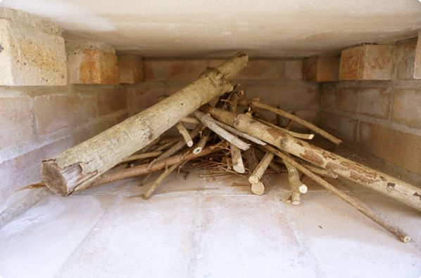
焼床の口をを余っている耐火レンガでなんとなく塞いで、
着火！
火は順調について、段々と太めの枝に燃え移り、水分を含んでいるピザ窯からは水蒸気が上がってきました。ま
だ
温度が低いので結構なス
ス
が出ています。
火もだんだんと強くなってきました。
最初はじっくりゆっくり火を入れて窯を締めるのだそう。が、こ
の
ゆっくりがどのくらいなのかが分からな
い
。
130度くらい。ここまで、火をつけてから30分。順調に温度が上がっています。
このままどんどん薪入れていっていいものなのかなー？と火床を覗き込んでいる目の前で、突然、
ドゥン！！バリッバリッバリ！
と音がして、何かが崩れた。
"マジかっ！"
と思った一瞬の間に、これまでのピザ窯を作ってきた作業が、走馬灯のようにというのか分からないけど、頭のなかを駆け抜けました。ほんとに。
「火床が、、、割れた、、、」と意気消沈どころではないテンションで、そのことを告げに行くと、共同制作者の嫁もすかさずのぞきに。
「えっ、、、下がはがれただけじゃん」と。
よくよく見てみると、ドーナッツ状に5〜8㎜剥げ落ちていただけでした。ドーナツの真ん中のところが穴が空いたように僕には見えたのです。
あー良かった〜。
って、全然良くないっ！！
けど、大きな穴が空いたり、真っ二つに割れたりしたんじゃないので、とりあえず、まだ続けられそうだったので、まあ、良かったってことにしよう。
崩れ落ちた板状のアサヒキャスターを取り除きました。
こんな感じにうすーく剥がれました。
そこから1時間かけて、ゆっくり、ビビリながら薪を足し250℃近くまで温度を上げました。
焼きたい温度はもっと上だけど、焼床が割れちゃったら、1枚も焼けなくなっちゃうので、この温度でとりあえず焼いてみることにしました。
パーラーにのせたピザを初投入。
なんだか手前の方に入れちゃったなー。
焼き時間
、
約5
分
で焼き上がり。
記念すべき一枚目のピザはススだらけ。あ、焼床が剥がれてあっせってて、煙突の蓋を外すの忘れてた。。。ススの味がする。全然思ってた感じの焼き上がりじゃない。フチもパンみたいだし、、、。
二枚目は、煙突のフタを外して、今度は奥の方に投入。
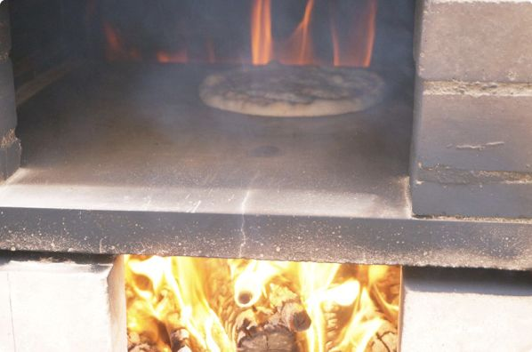
途中で回転させて、焼き時間は5分。
煙突のフタを外したから、だいぶスス感がなくなって、焼床の奥に奥に入れたからフチの感じも一枚目よりはいい感じです。

けれど、食べた感じがやっぱりパンっぽい。ビビっ
て
低い温度で焼いているから仕方な
い
か。。。
やっぱり、火入れは、火入れだけにして
、
ゆっくりじっくり温度を上げて、窯を締めるだけにすれば良かっ
た
。。。
この日はこれで終了。
ピザ窯でピザを焼く 2 回目
「ピザ窯でピザを焼く」の1回目は、ピザ窯ちょっと壊れちゃったし、ピザもイメージしていたものとは程遠いものだったし、、、がっくり落ち込みました。
ピザ窯作りがわりと順調だっただけに、ちょっとショックでしたが、落ち込んでいても仕方ないので2回目も張り切ってピザを焼いていくことに。
まずは灰の整理と破損部分の確認をしとこうかと。
灰です。
灰掻きで灰を取り除いてキレイにします。
焼床のチェック。
特に問題なし。手前のヒビが気になっていたけど、コンコン叩いてみた感じは問題なさそうです。
焼床の下の剥がれたところはこんな感じになっていました。

奥をよく見てみると、一番奥の角はごっそり落ちちゃった感じです。
焼床支えている耐火レンガとの接続部分は
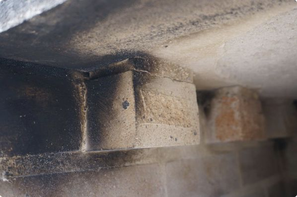
こんな感じにヒビが入っています。
それから、焼床の前面の接続部分にもヒビ。
まあ、このくらいのヒビは問題ないといいますか、仕方ない。焼床が崩れたら、崩れたで、また直すのがネタになるからいいか、と思うことにしました。
2回目
は
煙突を塞がずに、焼床の穴をレンガで塞い
で
、
小枝で組んだ中に着火剤を入れて、火をつけます。
だんだん燃え始めました。
ゆっくり、薪をくべながら
、
200℃を超えたのは1時間を過ぎ
た
ころです。
今度は1回目より高い温度で焼きたいので、もうしばらく薪をくべながら温度を上げていきました。着火してか
ら
1時間40分を過ぎたころ、温度計が300
℃
近くに
なりました。
このくらいで今回は焼いてみることにしました。耐火レンガを外して、ガンガン炎の上がる奥の方に一枚目のピザを投入。
おっ、いい感じにフチが上がってきています。

この日の一枚目のピザが焼き上がり
。
時間は３
分
。
全然スス感はないし
、
フチも、底もパリッとしてて1回目とは全然違うっ！いい感じ！
2枚目は1枚目と同じような焼き上がりでした。ので、薪を投入して
、
火力を上げてからの3枚目を投
入
。
おおっ！今までで一番いい感じに上がっています！
3枚目も焼き上がりに
は
３分
程
かかりましたが、
今まででフチの感じが一番いい感じです。ココの感じが全体に出て、
もっと焼色が付けば完璧！
あとはもうちょっと温度を上げればイメージのナポリピッツァになりそうです！食べても 、 サクサク、カリカリ感がいい感じ ！ です。
1回目（前回）は温度 が 250℃で焼き時間が５ 分 。2回目（今回） は 300℃で３ 分 でした。
ナポリピッツァは1分30秒で焼きあがるのが良
い
とされているので、次回は覚悟を決めて、温度を上げてみようと思います。
薪を燃やし始めて最初の温度が低いうちは、
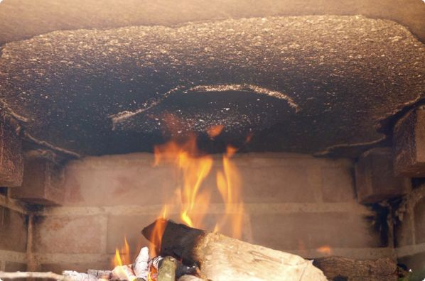
こんな感じにススが出ていて焼床の下が真っ黒になります。
でも、燃やし続けていって温度が徐々に高くなって300℃になる頃には、
こんな感じに、真っ白になっています。これを
「
スス切
れ
」
と言うそうです。そうなったらピザの入れ頃なんだそう。温度計がない場合は目安にしてみてください。
ピザ焼き１回目は、どうなるかと思ったけれど、2回目になんとか思っていたくらいのピザが焼けたので良かったです。
普通の電気やガスのオーブンでも、使いこなすのに時間がかかるものなので、石窯ピザ窯とは、じっくりと付き合って仲良くなっていけたらいいなー、などと思いながら後片付けをして今回のピザ焼きを終了しました。
ピザ窯でピザを焼く 3 回目

「ピザ窯でピザを焼く」の2回目と3回目の間にピザ窯にタイルを貼ったのですが、タイルは貼らない人もいるかと思うので、タイル貼りは後回しにして、このまま3回目のピザ焼きを続けます。
ピザ生地の作り方や、トッピング、ピザ生地ののばし方、ピザ窯の火の入れ方などなどは、1回目、2回目と同じです。
3回目 は "温度をしっかり上げて、温度を管理する " ことで、美味しいピザが焼けました。3回目の「ピザ窯でピザを焼く」で、ようやくちょっとだけピザ窯と仲良くなれたような気がします。
細い枝から中くらいのサイズ、太いサイズの薪にして窯の温度をじょじょに上げていきます。久しぶりに使うし、タイルを張りはしたものの雨ざらしなので、まず
は
窯の水分を飛ばすべく2時間くらい小さな火
を
入れておきました。
ピザ生地の準備、トッピングの準備などができたので
、
窯の焼床と煙突を塞いで、火を大きくし
て
温度計を挿しました。
だんだんと温度を上げていき
、
焼床の温度が300度くらいに上がったところ
で
、焼床のレンガと煙突の蓋を外して、
更に薪を入れて火力を上げます。
ピザ窯でピザを焼く温度は400度とも500度とも言われます。が、僕がこのピザ窯で何度か焼いてみた拙い経験でいうと、それは一層式のドーム型のピザ窯のはなしで 、 二層式の下から熱するタイプのピザ窯では、焼床の温度で330~380度くらいが焼きやすいんじゃないか な と思います。
焼床（ピザを入れる所）の温度が330度を超えるくらいのときに煙突に温度計を挿すとだいた
い
400
度
でした。
焼床と、窯の上の方ではけっこう温度が違いま
す
。
焼床の温度をあんまり上げてしまうと、ピザの表面がぷっくりいい感じに焼き上る前 に 下が焦げてしまいま す 。下から熱している二層式と、空間を熱している一層式のドーム型のピザ窯では、ここがちょっと違ってくるのかもしれません。
ピザ窯の造りとか、外気の温度によって変わってくるかもしれませんが、僕のピザ窯で は 煙突に指した温度計が400〜430度くらいで焼くといい感 じ に焼けました。多分、焼床近くの温度は330度〜くらいかと。
で、400度以上の窯で焼く場合は60秒〜90秒で焼き上がるのですが 、 二層式の窯で330~380度で焼く場合は、2〜3分 位 かかりました。
ピザ生地は1回目、2回目と同じですが、3回目はトッピングをいろいろと用意しました。
トマトソース（市販品）、バジルソース（市販品）に、ステッペンチーズ（ドイツの水分を抜いたモッツァレラ）、ブルーチーズ、プチトマト、マッシュルーム、ソーセージ、ピーマン、アンチョビ、はちみつ、塩、胡椒なんかを用意しました。
ピザを組んで、温度がしっかりと上がったピザ窯の奥の方にピザを投入。
ぷっくりとフチが上がってきたら、ピザを回して
、
前後を入れ替
え
ます。

下が焦げる前に
、
パーラーでピザを持ち上げて窯の上の高い温度のところにピザの表面を当てるよう
に
して、いい感じの焼き色を付けます。
焼き上がり！
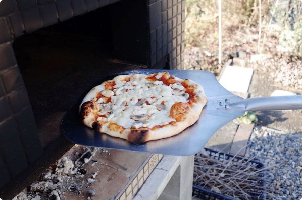
フチまで美味しいサクサクもっちりのピザが焼き上がりました。
今度
は
ステッペンチーズにブルーチーズをところどころに乗せたピ
ザ
です。
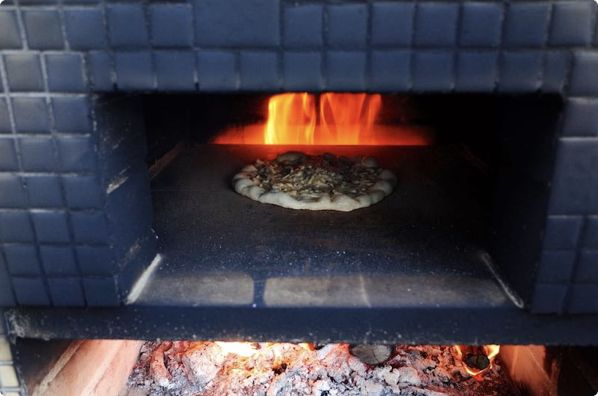
食べると"極上の甘じょっぱい"が完成です。
このピザのフチが炎の中でフワッと上がってくる瞬間がたまりません。
やっと、やっと、やっと3回目にして自作石窯で焼いたそれなりに美味しいピザにたどりつけました。
もちろんまだまだピザ生地やら、トッピングやら、焼き方やらに改良の余地はありますが、とりあえず目指していたくらいの"ピザ窯でピザを焼く"にたどりつけました。
日が落ちてからのピザ窯の火がけっこうきれいでした。
そして、次の日にピザ窯チェック。ススで汚れたピザ窯を拭き上げました。タイル張りをしてから初めて火を入れたので、タイルにヒビが入ったり、割れたりするかな？と心配していたのですが、全くそんなことはありませんでした。ちょっとだけすすけて男前になりました。
ピザ窯 外用タイルの貼り方 準備編
ピザ窯に使っている耐火レンガは、高温に耐えられる特殊なレンガなのですが 、 "耐火レンガは雨に弱い " ということをピザ窯が完成してから知りました。
雨に弱いので、使わないときはブルーシートをかけていました。そのブルーシートも月日が流れ、全体的に汚れ、穴が空き、その穴をテープで塞ぎ、、、最初は聞こえないふりをしてい た 「汚ならしいからなんとかして欲しい 」 という母からの再三の催促をとうとうかわしきれなくなり、タイルを貼りに行くことに。。。
雨風をしのぐなら 、 屋根つければいいんじゃね？
そうなんです。屋根をつけたほうがいいんです。実際、ピザ窯を自作した多くの人が屋根をつけています。です が 「屋根をつけると景色が見えづらくなるからイヤ 」 と母。で も 「なんとかして欲しい 」 というわけで、ピザ窯全体にタイルを貼ることにしました。
ピザ窯にタイルを貼る人より、屋根を作る人のほうが多いと思いますので、「ピザ窯の作り方」のおまけくらいに見ていただければと思います。
さて、ピザ窯にタイルを貼るにあたって、本やネットで色々調べたのですが、キッチンやお風呂など室内のタイルの貼り方はたくさん見かけたんですけど、屋外にいわゆるモザイクタイルと呼ばれているものを貼っている情報があまりなく、、、かき集めた情報を元に素人が屋外のピザ窯にタイルを貼った記録です。温かい目で見てやってください。
ピザ窯の温度を300度以上に上げても、ピザ窯の外側のレンガ自体はそれほどまで高温にはならないので 、 耐火とか耐熱とかはあんまり気にせずタイルを選びまし た 。
モザイクとは、小さな片を寄せ集めて柄や模様にすることで 、 小さなタイルのことをモザイクタイ ル と呼んでいるみたいです。
で、その小さなタイルとタイルの隙間を等間隔に開けて、一枚のシートになっていて貼りやすくなっているもののこと を タイルシー ト と呼びます。
小さなタイルをピザ窯全体に一枚一枚貼るのはものすごく大変そうだったので 、 モザイクタイルのタイルシートを使っ て 貼っていくことにしました。
シートと言っても、タイルの表面に紙が貼ってあるだけなので
、
切り離して使うこと
も
もちろんできます。
ピザ窯に使うタイルはホームセンターとかには見に行かず、インターネットで調べて比較検討して発注しました。その時に考えたことなどをいくつか。
【外用タイルかどうか】
モザイクタイルを探していると、室内で使えるか、お風呂に使えるか、室内の床として使えるか 、 外用として使える か 、外の床として使えるかなど、タイルにはそれぞれ用途があることを知りました。外用として使えるタイルの中から選びました。
【値段】
ピザ窯にどのくらいの数のタイルシートが必要かという計算の仕方はあとで書いていますが、僕の場合 は 40シートくらい必 要 でしたので、1シートが500円なら20000円。1シートが1500円なら60000円。かなり違ってくるので、当たり前ですけど 、 タイルの値段も選ぶ時の大事なポイン ト です。
【サイズと厚さ】
モザイクタイルには色々なサイズがあります。しかも焼き物なので、そのサイズはミリ単位で正確かというとそうでもありません。いろんなタイルを組み合わせて使う場合には、同じ種類の色違いとかなら可能かもしれません。
タイルの厚さも5㎜〜8㎜といろんな厚さのタイルがあります。意外と見落としてしまうところですが 、 組み合わせて使う場合は気をつけた い です。
【数量】
ピザ窯全体にタイルを貼ると、40シートくらいのタイルシートが必要になります。ので、そのくらいの在庫がないタイルシートは選択できません。結構いい柄で、値段も手頃 、 でも在庫がそんなにな い 、というタイルも結構ありました。
【納品日】
タイルの在庫を抱えていないメーカー取り寄せのショップはもちろん時間がかるのですが、タイルの専門店でも 、 タイルの表面に紙張りをしてシートにする作業を注文を受けてからす る ショップが多いです。ので、注文をしてからそれなりの日数がかかります 。 僕の場合は、注文をしてから4日 後 に 届きました。けっこう早い方だと思います。
というようなことを考えながら、モザイクタイルのシートを注文しました。タイルってものすんごい種類があって値段もピンきりで 、 しかも実物のタイルを見ないで注文す る ので、なかなか決めきれなかったのですが、最終的にえいやっ！と。
自分的には、なかなか昭和な感じのいいタイルを選択できたんじゃないかと。大きさの違うタイルが組み合わさっているのもいい感じ。安かったし。
嫁と二人で3日間、インターネットでタイルを見まくりました。Amazonや楽天でももちろんタイルは売っていますが、僕が買ったのはタイルの通販専門店でした。参考までに。
タイルを注文する時に必要なタイルの数というか量がわからないと注文できませ ん 。ので、どのくらいのタイルが必要なのかのおおよその検討をつけておきます。
タイルシート は 300㎜×300㎜（30㎝×30㎝ ） くらいのサイズが多かったです（僕が買ったのは特殊で325㎜×260㎜）。で、だいた い 1㎡（1m×1m）に必要なタイルシートは11.5 枚 となっていました。（選ぶタイルシートによって若干違いがあると思います）
タイルを貼る部分の表面積が分かれば、必要なタイルシートの枚数も計算できます。というわけで、計算をします。
ピザ窯を3つのパーツに分けて計算しました。
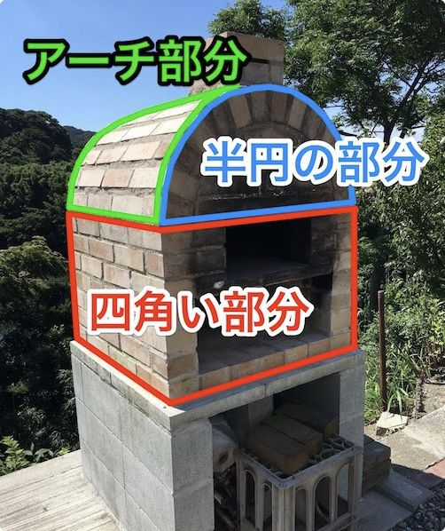
【下の四角い部分】
僕が作ったピザ窯の下の部分は4面とも同じ面積（幅と奥行は同じ長さ）なので、1面の面積を4倍します。横の長さは834㎜で、高さは65㎜の高さのレンガ7つに目地が10㎜なので、計算上は515㎜です。
834㎜（横の長さ）×515㎜（高さ）=429510≒0.43㎡
0.43㎡×4面
=
1.72㎡
前面は火床と焼き床の穴が開いているのですが、その分を煙突に当てることにして、ここは細かく計算しないことにしました。
【前後の半円の部分】
ピザ窯の上の半円の部分。半円が前後にあるので、正円の面積を求めます。
円の面積は、半径×半径×3.14で計算します。半径は下の四角い部分の半分なので417㎜。
417㎜（半径）×417㎜（半径）×3.14=546011.4 ≒ 0.55㎡
【上部のアーチの部分】
アーチの部分の面積は幅×半円の円周の長さなので、まず、半円の円周を出します。
円周は2×半径×3.14なので、その半分は半径×3.14。
417㎜（半径）×3.14=1309.38≒1310㎜（半円の円周）
834㎜（アーチの幅）×1310㎜（半円の円周）=10925540
≒
1.1㎡
【3つの面積の合計】
この3つのパーツの面積を足すと、ピザ窯の表面積は
1.72㎡+0.5㎡+1.1㎡ = 3.32㎡
1㎡でタイルシートが11.5シートなので、
3.32㎡×11.5シート=38.18 ≒ 39シート
大体39シート必 要 ということになります。割れたりして、足りなくなると作業が止まってしまうので、予備の分も考え て 43シート注 文 しました。
最終的に5シート余ったので、まあ、大体の計算でも大丈夫でした。
ピザ窯にタイルを貼る時に必要な材料
タイルを貼るのに必要な材料です。タイル以外のタイル貼りの材料 も ネットで注 文 しました。
タイルの選び方で説明したようなことを考えながら選んだタイルです。
シーラーとかプライマーと呼ばれる液体を最初に塗ることで、その上に塗るタイル用貼付け材がしっかりと接着するものらしいです。
タイルを貼り付けるセメント系の接着剤です。室内のタイルはシリコンとエポキシ樹脂でできている弾力性接着剤を使って貼るらしいのですが、屋外のタイル貼りにはセメント系と呼ばれる、タイルなどを接着するのに最適な配合になっている接着用のモルタルを使います。僕が使ったの は ボンドメント タイル 用 です。
タイルとタイルの隙間を埋める目地材には内装用と外装用がありました。また、色の種類も多くはないですがあります。僕 は イナメジ 外装用の 黒 を選びました。
ピザ窯にタイルを貼るのに必要な道具
ピザ窯を作る時の道具があればだいたい大丈夫なんですけど、３つだけ新しく買い足しました。
コンクリートなどを削る用の刃で、ダイヤモンドカップと言います。これでピザ窯のデコボコを削って表面を滑らかにしていきます。機械の力は偉大です。わりと簡単にピザ窯の表面がキレイになりました。
その名の通りタイルをカットするカッター。"切る"というより、きれいに割るという感じです。でも無いと全然きれいに割れないので買って良かったです。
セメント系の接着剤を波々の形にしてタイルを接着しやすくするためのコテです。
ピザ窯 外用タイルの貼り方 実践編
このピザ窯に 、 タイルを貼っていきま す 。
大まかにいうと、僕はこんな感じにピザ窯にタイルを貼っていきました。
1.ピザ窯の凹凸を削って整える
タイルを貼るところがデコボコだと貼ったタイルもデコボコの仕上がりになってしまうので、まずはピザ窯の出っ張っている所をディスクグラインダーを使って削っていきました。
2.ピザ窯にシーラー（プライマー）を塗る
このあとに塗る下地材がしっかりと接着するようにシーラーを塗りました。
3.タイル用張付材を下地として塗る
モルタルのような状態の接着用の張付け材（ボンドメント）を下地材として全体に塗って、ピザ窯のデコボコを更になくしていきます。
4.タイル用張付材でタイルを貼り付けていく
タイル用張付材（ボンドメント）でピザ窯にタイルを貼り付けていきます。
5.タイルの紙を剥がす
タイルを全部貼ったら、タイルシートの表面の紙を水で濡らして全部はぎます。
6.目地材を目地に入れる
目地材を貼ったタイル全体に塗りつけて、タイルとタイルの隙間に目地材を入れます。最後にきれいに拭き取ったら、完成です。
今回も初めてのことだらけだったので、これでいいのかな？大丈夫かな？ちゃんとタイル貼れるのかな？とうんうん唸りながら作業をしていきました。
ではでは、実際にタイルを貼っていった時の様子です。
タイルを貼った時に、デコボコにならないようにピザ窯の表面を平らにする作業から。
最初はピザ窯に下地材（モルタルのようなもの）を塗りつけて平らにしていこうと思っていたのですが、実際にピザ窯を見てみると
、
思っていた以上にデコボコしてい
て
、これをプロの左官屋さんみたいにキレイにならすのは難しーなーと。
そんなわけで急遽、ピザ窯の表面を削るべ
く
ディスクグラインダーの
刃
をホームセンターに買いに行きました。
買ったのはこれです。
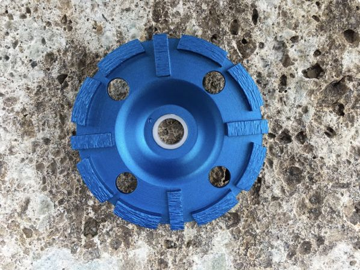
コンクリートやブロック、レンガなどを削るためのダイヤモンドドライカップという名前の
刃
です。２つのホームセンターに行って、安い方で買いました。値段が倍くらい違って、もう一つのホームセンターでは2980円でした。
ダイヤモンドドライカップ 1450円
ディスクグラインダーに取り付けて、
ピザ窯の出っ張っている所を削っていいきます。
結構、簡単に削れます。手でピザ窯をを撫でまわして、出っ張っている所をちょっとづつ削っていきました。
この作業は
、
ゴーグルと防塵マスクは必
須
です。かけらがものすんごい飛んできます。
デコボコだったピザ窯の表面を
こんな感じになるまで削りました。
へこんでいる所に合わせて削ると、かなり削らなくちゃいけないので
、
出っ張っている所に合わせ
て
削りました。ピザ窯全体が削り終わりました。
正面から見ても、だいぶ丸くなったんじゃないかと。
削り終わったら、表面に貯まった削りカスをホウキなどで掃いて、
タワシでごしごし水洗い。
きれいに洗ったピザ窯 が しっかり乾いたとこ ろ で、デコボコのボコの方を埋めるため の 下地材が良くくっつくようにするためのシーラー（プライマー）を塗りま す 。
僕が調べたところによる と NSハイフレックスHF-100 0 っていうプライマーが良さそうな感じでした 。 プライマーはそんなに量を使わないので一番小さいものでい い と思います。
僕は以前に外壁を塗った時のシーラーが残っていたので、それを使うことにしました。
このシーラー（プライマー）は、液体なので、こんなローラーを使ってコロコロ塗ります。
これも壁塗りのときに使ったやつで、ホームセンターでもインターネットでも数百円くらいです。もちろん刷毛でも塗れます。
（ペイントローラー 650円）
と、その前 に 養生をしま す 。これから塗るシーラーとか、その後に塗る下地材などがついてほしくない所を覆っておきます。
こんなビニール付きのテープが家にあったので、これを使いました。今回
の
タ
イル貼りでこのテープで3回養生したのですが、25m巻のコロナマスカー1本で足りまし
た
。
（養生用テープ 布コロナマスカー 260円）
緑のテープの所を塗りたいところと塗りたくないところの境目に貼っていきます。
そんで、ビニールをビロビロと広げます。
このビニールの部分はもっと長いものもあるので、（今回使ったのは550㎜)そのほうが下の地面まで覆えて、シーラーとか下地材とかをぼとぼと落としても安心です。今回はあり物を使ったので、下に新聞紙を敷いて作業をしました。
しっかり養生をしたら、こんな感じにコロコロコロコロ、ピザ窯の表面全体にシーラーを塗ります。
全体に塗って、そのシーラー（プライマー）
に
書いてある乾燥時間ほど乾かした
ら
次の工程です。
今度はピザ窯のデコボコのボコの部分 、 へこんでいる部分を埋める作 業 です。
僕が買ったのは 、 ボンドメント タイル 用 というセメント系と呼ばれるタイル張付け材です。
ボンドメント タイル用 2300円×2袋＝4600円
水を入れて練るだけで、タイルを接着することができるモルタルのようなも の で、それを下地材としても使います。
ボ ンドメント一袋で厚さ3㎜で塗った場合、5.5㎡の施工ができ る らしい。。。まったくもってどのくらい買っていいのか分からない。
ピザ窯の表面積は、3.32㎡なので、3㎜で塗れば足りるっちゃ足りるんですけど、随分へこんでいるところもあるし、下塗りと、タイル貼りにも使うので、2袋注文しました。
結果としては
、
一袋とちょっと使っ
た
ので、良かったといえば良かった。多分上手な人がやれば一袋でもいけそうな気はする。
ボンドメントをトロ舟に出して、水を加えて練っていきます。ピザ窯を作った時のモルタルと同じように
、
片側をあげておくと水が一方に流れて混ぜやす
い
です。
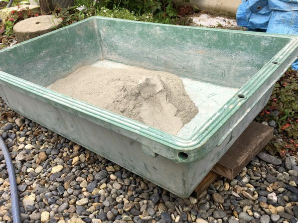
ボンドメントは、目が細かくサラサラした感じです。
ボンドメントの袋には
、
一袋に対して5.5Lの水を入れて混ぜ
る
、と書いてあったので、だいたい半分のボンドメントを入れて、水を2.25Lの水を入れて練ってみました。
よく混ぜると、こんな感じの柔らかい粘土状になります。
これをピザ窯に塗ったくっていきます。使うのは、ピザ窯作りのときにも使ったコテと盛板。
煙突、アーチ部分、前後ろと全部、デコボコがなくなるように塗っていきました。
それなりの時間で固まってきますが、ただ塗って均していくだけなので、順調に塗れました。
ボンドメントを全体に塗り終わりです。
お世辞にもキレイとは言えませんが、タイルを貼ってデコボコにならないくらいには表面をならせたんじゃないかと。
塗り終わったら
、
ボンドメントが固まらないうちに養生したテープを剥がしま
す
。
養生はめんどくさいですが、ちゃんとやっておくとキレイなラインに仕上がりますね。このまましっかりと乾かしたら、いよいよタイル貼りです。
今回僕が使ったタイ ル 約3㎝×3 ㎝に 5㎝×5 ㎝ のタイルがちょっとだけ入っているものを使ったのですが、すべての面 で きっちりとちょうどよくタイルが入るわけではありませ ん 。
なので、タイルを半分や斜めに切って調整します。
大きなタイルとかならディスクグラインダーに専用の薄い刃をつけてカットすることもできるんでしょうが、さすがに3㎝のタイルをディスクグラインダーで切るのは押さえるのが怖い。でも、切りたい。
調べてみる と タイルカッタ ー なるものでタイルを切ることができるみたいなので、ホームセンターで買って来ました。
これです。
タイルカッター 1050円
ペン先の方にカッタ ー が付いていて、これでタイルをキコキコ傷をつけてから、おりゃっ！とペンチなどで割るときれいに切れるものです。
カッターの逆側の又になっている部分はキコキコしたタイルを挟んで、テコのようにしてパキッと割るのに使うのですが 、 今回のタイルのようには小さい物には使えませ ん 。
タイルシートは、カッターで紙の部分を切って必要な分だけ切るこ
と
ができます
。
紙を水で濡らし
て
暫し待ちます。
紙を端から丁寧に剥がすと、キレイにとれます。
このタイルにカットしたい線を書いて、
差し金を当てて
、
タイルカッターでキコキ
コ
します。
タイルカッターでキコキコされたタイルです。うっすら傷が付いている程度、、、
うーん、、、こんなんで、ほんとにきれいに切れるのかな？と思ったのですが、とりあえず
、
タイルが傷つかないようにタオルを挟んでペンチ
で
、
エイヤッ！
あ
、
わりときれいに割れた！
といった感じ
に
必用な分だ
け
タイルを縦半分と、斜めに割っていきました
。
斜めの方はやっぱり端っこが細くなるので、あんまりうまく切れませんでし
た
が、まあ、遠目で三角に見えれば大丈夫ということにしよう。
カットするタイル
の
"必用な分だけ"をどうやって出した
か
というと、今回はまったく計算せず、タイルをピザ窯に直接当ててみました。こんな感じに。
そんで、ちょっと複雑なというかシートそのままじゃ貼れない前面と後面は、タイルを当てて鉛筆でアバウトにこんな感じで貼る、という目安を書きました。
この上
に
接着用のボンドメントを塗ったら鉛筆の線は見えなくなるので、あくまで目
安
です。ここにこんな感じに貼っていって
、
半分のタイルと三角のタイルがこの位の数がいる
な
という検討をつけるくらいの感じです。
さて
、
再び養生し
て
ボンドメントを練ってタイルを貼っていきます。今回買ったタイルシートです。
30シートで一箱になってたんですが、タイルって、ものすんごく重いです。
タイルは何を選ぶかで全然金額が変わってくるんですけど、参考までに僕が購入したタイルは、
タイルシート 1枚@290円×43＝12470円
送料 1540円
1シート290円ってめちゃくちゃ安いです！
気持ち緩めに（水多めに）ボンドメントを練っ
て
、まずは前面のアーチ部分から貼っていきました。
僕はクシ目のコテだけでうまく塗りつけることができなかったので
、
普通のコテで塗りつけてから、クシ目のコテで波々模様をつけ
て
いきました。
クシ目コテ 840円
アーチ部分は6枚づつに切り離したタイルのシートを貼っていきました。
ハンマーの柄でコンコンコンコン叩いて、一枚ずつしっかりタイルを埋め込んでいく感
じ
で貼り付けていきます。
まるまるシート1枚のところ、タイル3枚づつのところ、半分のタイル、三角のタイルなど、だいたい最初に書き込んだ鉛筆の線の通りに前面を貼っていきました。
今度は横面の
上
から下に向かって貼っていきまし
た
。素人左官なので、上から貼っていかないと、先に貼った下のタイルが汚れちゃうかなと思ったので上から下に貼っていくことにしました。
横面の半分にタイルを貼ったところで、日が暮れてしまいましたが、もう半分もこの日のうちに貼っておきたかったので、電気をつけて作業をしました。なんか、作業現場っぽい。
次の日。後面はこんな感じで貼っていくよ、と鉛筆で書いた通りにタイルを並べておいて、それを貼り付けていきました。
全面、タイルを貼り終わりました。

しばらく乾燥させたら、いよいよ紙を剥がしてタイル貼りの全貌が見えてきます。
100円ショップで買った洗車用のスポンジで全体を濡らしま
す
。
紙の端っこから、ゆっくり剥がしていきます。
ん？あれ？、むむむ。。。
紙を剥がしてみると
、
けっこうくっついてないタイルが、
、
、
剥がれちゃったタイル は 少量練ったボンドメントをタイルの裏に塗りつけて、貼り直 し ました。
やっぱり、タイルを貼る時に塗るボンドメントをキレイに均一に塗れていないので
、
タイルがちゃんとくっつかない所や逆に目地ががっつり埋まっちゃってしまっ
た
ところとかがありました。
これじゃあ、このあとの目地材が入らなくてちっともきれいな仕上がりにならないので
、
飛び出たところは古いノミでコンコン削り取りまし
た
。
コンコンしてるとまた他のタイルが剥がれちゃったりして、それをくっつけて、という作業
を
嫁と二人で、多分2時間弱くら
い
はやっていたと思います。
もちろんタイルがちゃんとくっついていて、目地も埋まってないという部分もあるんですけど、全部が全部こーゆーふーにはいきませんでした。
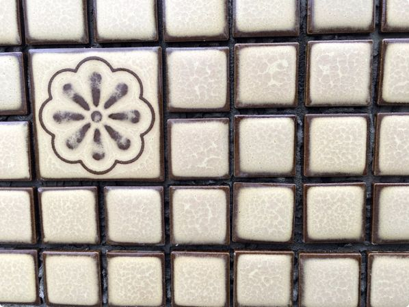
タイルの貼り付けの修正が終わったら
、
一度、表面をキレイにしま
す
。修正のときに出たボンドメントのクズやタイルに残っている紙や糊をしっかりとキレイに拭き取ります。
目地を入れる前のピザ窯です。
いよいよタイル貼りの最終工程です 。 目地を埋めていきま す 。ほんとは、タイルを貼ってから1日2日おいたほうがいいみたいなんですけど、今回は時間がなく、少々乾かしたら目地を詰めていくことにしました。
目地材も室内用と屋外用があっ て 、色も白、グレー、ベージュ、黒などがありました。
今回使ったタイルが、薄いクリーム色に周りがこげ茶色なので、目地もこげ茶色にしたかったのですが、こげ茶色の目地は見つけることができず、黒を選びました。
目地材は一台（25kg）も必要ないので、小分けされた2kgのものを4つ買いました。
買ったの
は
イナメジG4Nの
黒
という目地材です
。
4つ買いましたが、3つ（6kg）で足りまし
た
。
イナメジG4N 2kg @436×4=1944円
送料 870円
イナメジはものすんっごく細かい粉でできています。バケツに移すと粉が煙状に舞い上がります。煙が収まった状態がこれ。
イナメジにどのくらいの水を入れて練るのかという目安を見つけられなかったので、適当に入れてみました。
水を入れて混ぜ混ぜ混ぜ混ぜ、、あれ？
全然、混ざらない。これは水を入れたばっかりの写真じゃありません。混ぜ混ぜ混ぜ混ぜしてからの写真です。水が粉の上をさまよってる感じで、水と粉が混ざっていきません。
こんなんで大丈夫か？ドキドキしながら更に混ぜ続けていくと、
やっと混ざってきました。あーよかった。水を調整しながら練っていきました。

意外と早く固まってくる感じだったので
、
ちょっと水分多め
に
練りました。このくらい、
で、この目地材をピザ窯全体に塗っていきます
。
ゴム製のコテがいいらし
い
んですが、持ってないので、なるべくタイル
に
優しそうなプラスチックのコテ
で
塗りつけていきました。
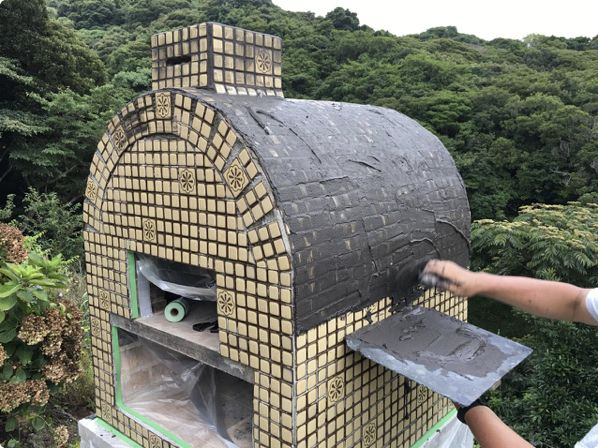
その上か
ら
100円ショップの調理用のゴムベラで余計な目地材をはら
い
、
水で濡らしたスポンジでタイルの表面を拭き取りつつ、目地を均します。
こ
の時点で、いくらスポンジでこすっても、そんなにキレイにはなりませんでし
た
。
タイルは白っぽくて、目地は黒なので、汚れを伸ばしているだけ。ある程度、目地材を拭き取ったら、そのまま放置して目地材が固まるまで待ちます。
次の日の朝
、
固く搾ったスポンジで全体を拭いたあと、乾いたタオルで汚れの目立つ所をフキフキし
て
仕上げました。
こんな感じの仕上がりです。
黒の目地だけど、グレーっぽい仕上がりです。
ピザ窯のタイル張り、完成！！

今回のタイル貼りは4日くらいの作業日を予定していたのですけど、天気予報が大外れで作業できる日が2日くらいしか取れず、それでもなんとか貼れました。
水平とかも取らずに適当に貼っていったわりには、まあまあきれいに貼れたんじゃないかと。（自画自賛）
これで一応、雨がじゃんじゃん降っても大丈夫！なはず。
著者紹介
『DIY初心者でもできた！石窯・ピザ窯の作り方』
著者 ： そー
1974年生まれ。千葉県在住。
大学を卒業後、ホテルや個人店などで料理人として従事。その後「レストラン艸（そう）」オーナーシェフを経て、現在はピザ窯の作り方を書いているブログ「いち歩」、料理のブログなどのWEBサイトの運営、WEBライターを生業にしているフリーランスです。
本書に関する質問や写真の使用許可、お仕事の依頼、執筆依頼などはメールにてお気軽にお問い合わせください。
【運営サイト】
体験レビューブログ「いち歩」
https://itiho.com/
料理レシピブログ「プロレシピブログ 艸（そう）の作り
方
」
https://sou-recipe.com/
Facebookページ
https://www.facebook.com/chefsou/